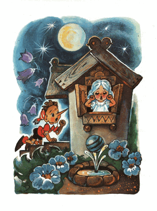
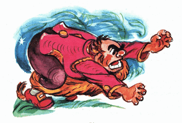
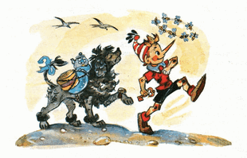
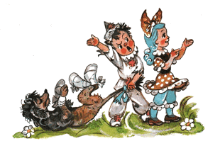

Kunci Emas, Atau Petualangan Buratino
| Judul asli | : Zolotoy Klyuchik, Ili Priklyucheniya Buratino |
|---|---|
| Pengarang | : Aleksey Nikolayevich Tolstoy |
| Penerbit asli | : Tsentral'nyy komitet VLKSM Izdatel'stvo detskoy literatury; Leningradskoye Otdeleniye; 1936 |
| Genre | : Komedi/Petualangan |
| Diterjemahkan oleh | : Heri Rudini |
Kata Pengantar
Ketika saya masih muda; dahulu sekali; saya pernah membaca sebuah buku: "Pinokio, atau Petualangan Boneka Kayu" (Boneka Kayu di dalam bahasa Itali: Buratino).
Saya sering menceritakan kepada sobat-sobat saya, para pemuda dan pemudi, petualangan seru si Buratino. Tapi semenjak buku itu hilang, saya pun menceritakannya seiring waktu semakin berbeda, dengan memasukkan macam-macam kisah, yang di dalam buku itu sama sekali tidak ada.
Sekarang, setelah bertahun-tahun lamanya, saya kembali teringat sobat lama saya 'Buratino' dan terpikir untuk menceritakannya pada kalian, muda mudi sekalian, kisah luar biasa tentang si manusia kayu.
-Aleksey Tolstoy-Seniman kayu bernama Josepi mendapati di tangannya sebatang kayu, yang memekik layaknya suara manusia.
Dahulu kala, di sebuah kota di pesisir laut Mediterania hidup seorang seniman kayu tua bernama Josepi, dia dijuluki si Hidung Merah.
Pada suatu hari dia mendapati di tangannya sebatang kayu, kayu gelondongan yang biasa dipakai untuk bahan bakar perapian di musim dingin.
- Lumayan nih, /Josepi berkata pada dirinya sendiri/ mending dibikinkan sesuatu saja, kaki-kaki meja misalnya...
Josepi mengenakan kacamatanya, yang dililit benang, sebagaimana kacamata itu sudah usang, dia pegangi kayu gelondongan itu dan mulai mengupasnya dengan kampak.

Tapi ketika dia sedang mengupas, tiba-tiba terdengar suara yang memekik tipis:
- Oy oy, tolong pelan-pelan!
Josepi menurunkan kacamatanya ke ujung hidung lalu memeriksa sekeliling bengkel-kayu itu. Tidak ada siapa pun...
Dia membungkuk ke kolong meja. Tidak ada siapa pun...
Dia melihat ke dalam keranjang serpihan kayu. Tidak ada siapa pun...
Melongok ke ambang pintu. Tidak ada siapa pun di luar...
- "Masa iya aku melamun?" /pikir Josepi/ "Siapa yang barusan memekik?"
Sekali lagi dia ambil kampaknya, dan sekali lagi, begitu menancap ke kayu itu...
- Aduh, linu, apa kubilang! /suara tipis itu merintih/
Kali ini Josepi kaget bukan main, kacamatanya sampai berkeringat... Dia memeriksa setiap sudut ruangan, bahkan dia merangkak masuk ke perapian, mendongakkan kepalanya, cukup lama mengamati ke dalam cerobong.
- Tidak, tidak ada siapa pun.
- "Apa mungkin, aku meminum sesuatu yang tidak lazim sehingga telingaku berdering?" /Josepi bertanya-tanya pada dirinya sendiri/
Tidak, hari ini dia tidak meminum apa pun yang tidak lazim... Rileks sejenak, Josepi mengambil sugu, dia ketok-ketok bagian belakang sugu itu dengan palu, untuk mengatur supaya tidak terlalu banyak dan tidak terlalu sedikit pisaunya mencuat, dia baringkan kayu itu di meja dan mulailah dia serut...
- Oy, oy, oy, hati-hati, apa yang kau serut? /suara tipis itu merintih kesal/
Josepi melepaskan sugunya, mundur, mundur dan seketika terjungkal ke lantai. Sekarang dia mengerti, suara tipis itu berasal dari kayu itu.
Josepi memberikan kayu-berbicara itu kepada temannya, Carlo
Waktu itu Josepi dikunjungi oleh sobatnya, pengamen organ bernama Carlo.
Carlo yang dulu, mengenakan topi bundar lebar, sendiri berjalan kaki mendorong-dorong organ putarnya, dari kota ke kota sambil bernyanyi dan memainkan musik, demi sesuap roti.
Sekarang Carlo sudah tua dan sakit-sakitan, dan organ putarnya sudah lama mogok.
- Halo Josepi /masuk ke dalam bengkel lalu bertanya/ Ngapain duduk di lantai?
- Ah aku... Seperti yang kau lihat, aku kehilangan sekrup kecil... Nah ini dia! /jawab Josepi sambil melirik ke arah kayu/ bagaimana kehidupanmu sekarang, wahai orang tua?
- Buruk, /Jawab Carlo/ aku masih berpikir, apa yang harus kukerjakan untuk memperoleh sesuap roti... barangkali kau bisa membantuku, memberi saran apa gitu...
- Gampang sekali /Josepi menjawab dengan gembira dan berkata di benaknya: "Akan kusingkirkan kayu sialan ini sekarang"/ Gampang sekali: lihatlah, terbaring di atas meja sebatang kayu istimewa, bawa kayu itu, Carlo, bawalah ke rumahmu...
- Ehhh... /jawab Carlo dengan ragu/ Lalu apa selanjutnya? kubawa kayu itu pulang, tapi kan di pondokku tidak ada perapian.
- Aku belum selesai bicara padamu, Carlo... Ambil sebilah pisau, ukir kayu itu menjadi sebuah boneka, ajarkan dia berbicara dengan kata-kata lucu, berjoget dan bernyanyi, mainkan dia kota ke kota, hasilkan sekepal roti dan segelas anggur.
Kemudian dari arah meja, di mana kayu itu terbaring, suara itu memekik dengan gembira:
- Bravo, ide cemerlang, Hidung Merah!
Josepi lagi-lagi tercengang ketakutan, sedangkan si Carlo hanya celangak-celinguk keheranan; "suara dari mana itu?"
- Kalau begitu, terimakasih, Josepi, atas saranmu. Ayo mari, kayunya.
Lantas Josepi meraih kayu itu dan buru-buru menyodorkan pada sobatnya. Tapi, entah karena dia menyodorkan dengan ceroboh, entah kayu itu loncat sendiri dan menggetok kepala Carlo.
- Oh jadi begini hadiahmu! /bentak Carlo tersinggung/
- Maaf, sobat, itu bukan aku yang menggetokmu.
- Terus aku sendiri yang menggetok kepalaku?
- Tidak, sobat, itu pasti, kayu itu sendiri yang menggetokmu.
- Omong kosong, kau yang menggetok...
- Tidak, bukan aku...
- Aku sudah tahu, kau ini pemabuk, Hidung Merah, /kata Carlo/ dan ternyata kau juga pembohong.
- Eh kau, sumpah ya! /bentak Josepi/ kemari kau!
- Kau sendiri yang kemari! Biar kujewer hidungmu!..
Kedua orang tua itu bercekcok dan mulai menerkam satu sama lain. Carlo memplintir hidung merah Josepi, dan Josepi menjambak rambut putih Carlo, yang tumbuh di sekitar kuping.
Selanjutnya mereka mulai heboh saling menerjang pinggang satu sama lain. Suara melengking dari arah meja kali ini bersorak menyemangati:
- Hajar, hajar yang betul!
Pada akhirnya dua orang tua itu lelah dan kehabisan nafas. Josepi berkata:
- Sudahlah damai saja...
Carlo menjawab:
- Iya deh damai saja...
Dua orang tua itu berciuman. Carlo menjinjing kayu itu di ketiaknya dan pulang.
Carlo mengukir kayu itu menjadi boneka dan menamainya Buratino
Carlo tinggal di suatu pondok di kolong tangga, tempat yang mana dia tidak punya apa pun di sana, selain perapian yang cantik, di dinding menghadap pintu.
Tapi perapian yang cantik itu, dan api di dalam perapian itu, dan ketel, yang mendidih di atas api, ternyata tidaklah nyata; hanya terlukis pada selembar kanvas usang.
Carlo masuk ke dalam pondok itu, duduk di kursi satu-satunya menghadap meja tanpa kaki, dia letakkan kayu itu begitu dan begini, dan mulailah dengan pisau dia raut kayu itu, membuat sebuah boneka.
- "Bagaimana aku menamainya?" /Carlo berpikir/ Akan kunamai dia Buratino. Nama itu akan mendatangkan kebahagiaan padaku. Setahuku ada satu keluarga, semuanya bernama Buratino: ayahnya Buratino, ibunya Buratino, anak-anaknya pun Buratino... Mereka semua hidup ceria dan bahagia.
Langkah pertama dia raut kayu itu menjadi rambut, lalu kening, lalu sepasang mata...
Tiba-tiba sepasang mata itu dengan sendirinya terbuka dan menatapnya...
Carlo tampaknya tidak ada tanda-tanda kalau dia kaget, malah dia bertanya dengan lembut.
- Sepasang mata kayu, kenapa kalian menatap sinis begitu padaku?
Tapi boneka itu hanya diam; tentu saja, karena dia belum punya mulut. Carlopun membentuk pipi, kemudian hidung; sederhana saja...
Tiba-tiba hidung itu dengan sendirinya meregang, tumbuh, dan berubah menjadi hidung panjang nan runcing, Carlo sampai mendengus:
- Tidak baik, panjang...
Lantas dia potong bagian ujung hidung itu. Tidak seberapa!
Hidung itu menggeliat, berputar-putar, dan kembali seperti semula; batang panjang hidung runcing penasaran.
Carlo lanjut ke bagian mulut. Tapi begitu selesai dia mengukir sebuah bibir; mulut itu langsung terbuka:
- Hi-hi-hi, Ha-ha-ha!

Kemudian nyosor-nyosor, mengusili, menjulurkan lidah merahnya yang tipis.
Carlo, tanpa menghiraukan tingkah-tingkahnya itu lanjut saja mengukir, memotong dan meraut. Membuatkan boneka itu dagu, leher, bahu, badan, lengan...
Akan tetapi, belum tuntas dia mengukir jemari yang terakhir, Buratino mulai menjamah kepala Carlo yang sulah, menggetok dan mengelitik.
- Dengar, /kata Carlo dengan tegas/ belum tuntas aku mengukirmu, tapi kau sudah mulai bertingkah... apalagi selanjutnya... hah?
Lalu dia menatap tegas pada Buratino, sedangkan mata Buratino yang bulat, menatap papa Carlo seperti mata tikus.
Carlo membuatkannya kaki yang panjang lentik dengan telapak kaki yang lebar. Di akhir pekerjaan, dia turunkan anak kayu itu ke lantai, untuk diajarkan berjalan.
Buratino bergoncang-goncang berdiri di atas kedua kakinya yang kurus, selangkah pertama, selangkah lagi, melompat, melompat lurus ke pintu, melewati ambang pintu dan terus ke jalan.
Carlo panik dan mengejarnya:
- Hei, nakal, kembali sini!..
Arah ke mana Buratino terbirit-birit di sepanjang jalan, seperti seekor terwelu, dengan hanya beralaskan telapak kaki kayu, dia "taki-tuk, taki-tuk" menutuk-nutuk jalan batu...
- Cegat dia! /sahut Carlo/
Para pejalan kaki tertawa-tawa, menunjuk-nunjuk ke arah Buratino yang kabur. Di persimpangan jalan berdiri seorang polisi bongsor berkumis baplang dan mengenakan topi segitiga.
Melihat ada manusia kayu kabur, dia lebarkan kedua kakinya, menutup jalan. Buratino hendak menerobos celah antara dua kakinya, namun polisi itu segera menerkam batang hidungnya dan memeganginya, hingga papa Carlo tiba...
- Heh, tunggu kau ya, kita belum selesai /kata Carlo terengah-engah dan hendak menyelipkan Buratino kedalam saku jaket/
Buratino sungguh tidak rela, di hari yang indah ini, di depan orang banyak, berakhir dengan kaki terperangkap di dalam saku jaket; lantas dengan cekatan dia berbalik, menjatuhkan diri ke jalan batu dan pura-pura mati...
- Ay, ay, /polisi itu berkata/ hal ini tampaknya tidak baik!
Para pejalan kaki mulai berkerumun. Melihat Buratino yang tergeletak, mereka menggeleng-gelengkan kepala.
- Malang sekali... /gaduh mereka/ Pasti karena kelaparan...
- Carlo membantingnya sampai mati! /seseorang bergaduh/ si pengamen tua ini hanya pura-pura jadi orang baik, dia kejam, dia orang jahat!
Mendengar itu semua, polisi berkumis itu menarik kerah si Carlo yang sial dan menyeretnya ke kantor polisi.
Carlo terseok-seok dan mengerang dengan keras:
- Oh, oh... sudah nasibku membuat anak dari kayu!
Ketika jalanan sepi, Buratino mengangkat batang hidungnya, melihat sekeliling, kemudian berlari sambil melompat-lompat, pulang ke rumah...
Si Jangkrik-Berbicara memberi Buratino nasihat bijak
Memasuki pondok di kolong tangga, Buratino berhambur ke lantai, bersandar ke kaki kursi.
- Selanjutnya apa lagi ya?
Jangan lupa, Buratino baru menjalani hari pertama setelah kelahirannya. Pikiran dia masih polos-polosnya, masih pendek-pendeknya, masih cetek-ceteknya.
Kemudian terdengar sesuatu:
- Krik-krik, krik-krik, krik-krik.
Buratino memutar kepala, mengamati sekeliling pondok.
- Hei, ada siapa di sini?
- Di sini ada aku, krik-krik...
Buratino melihat sesosok makhluk, agak mirip kecoa, tapi kepalanya seperti belalang. Ia hinggap di dinding di atas perapian dan mengerik pelan "krik-krik", menatap cembung, seperti dari kaca, sepasang mata bianglala, menggerak-gerakkan antenanya.
- Hei, kau ini siapa?
- Aku, si Jangkrik-Berbicara, /jawab makhluk itu/ telah menghuni ruangan ini lebih dari seratus tahun.
- Di sini aku tuannya, enyah kau cepat.
- Baik, aku akan pergi, meskipun sedih rasanya harus meninggalkan ruangan, yang sudah kuhuni seratus tahun lamanya /jawab jangkrik itu/ Tapi, sebelum aku beranjak pergi, dengarkanlah nasihat bijakku ini.
- Betaaaapa aku butuh nasihat seekor jangkrik kuno...
- Ah, Buratino... Buratino, /si Jangkrik mulai berkata/ Berhenti nakal, patuhi Carlo, jangan kabur dari rumah tanpa sebab dan mulai besok pergilah sekolah. Itulah nasihatku. Kalau tidak, maka bahaya mengerikan dan petualangan menakutkan menantimu. Jika aku jadi kau, aku tidak akan membiarkan hidupku berakhir sia-sia bagaikan lalat kering.
- Kekekekenapa? /tanya Buratino/
- Kau akan lihat sendiri 'Ke ke ke kenapa' itu, /jawab si Jangkrik-Berbicara/
- Ah kau, dasar hama kecoa purba! /teriak Buratino/ lebih dari semua yang ada di dunia ini, aku menyukai petualangan menakutkan. Besok dini hari menjelang pagi aku akan kabur dari rumah; memanjat pagar, mengacak-acak sarang burung, mengusili anak lain, menjambret ekor anjing dan kucing... dan masih banyak lagi nanti!..
- Kasihan sekali aku padamu, kasihan sekali, Buratino, kau akan berlinang ari mata pahit.
- Kekekekenapa? /tanya lagi Buratino/
- Oleh karena, kepala kayumu yang bodoh itu.
Lantas Buratino melompat ke kursi, dari kursi ke meja, meraih palu dan melemparkannya ke atas kepala si Jangkrik-Berbicara.
Jangkrik cerdas tua itu mendesau berat, kumisnya berkedut-kedut lalu merayap ke belakang perapian; pergi dari ruangan itu untuk selama-lamanya.
Buratino nyaris tewas karena ulah dia sendiri.
Papa Carlo membuatkannya pakaian dari kertas warna dan membelikannya buku-ABC
Setelah kejadian dengan si Jangkrik-Berbicara, pondok di kolong tangga menjadi sangat sepi. Hari semakin berlalu, dan perut Buratino juga mulai sepi.
Mata dia terpejam; tiba-tiba terlihat ayam goreng di atas piring.
Matanya melek; ayam goreng di atas piring menghilang.
Terpejam lagi; terlihat di atas piring, separuh puding semolina separuh selai arben.
Melek lagi; tidak ada puding semolina separuh selai arben di atas piring. Dari situ Buratino mengerti, bahwa dirinya sangat lapar.
Dia bergegas ke perapian menyodorkan batang hidungnya ke uap ketel yang mendidih di atas api, tapi batang panjang hidung Buratino malah tembus mencoblos ketel itu, sebab, sebagaimana kita ketahui, baik perapian, dan api, dan asap, dan ketel, itu semua hanya dilukis oleh si miskin Carlo pada selembar kanvas usang.

Buratino menarik hidungnya lalu mengintip ke dalam lubang; di balik kanvas yang menempel di dinding itu ada semacam pintu kecil, tapi di situ dipenuhi jaring laba-laba, seperti tidak pernah dibuka.
Buratino lanjut meraba-raba ke setiap pojokan; tidak ditemukan apa pun, bahkan kerak roti atau tulang ayam sisa-sisa kucing pun tidak ada.
Ah, tidak ada apa pun, si Carlo miskin tidak punya persediaan apa pun untuk makan malam!
Tak sengaja dia menemukan di dalam keranjang serpihan kayu ada sebutir telur ayam. Dia ambil, dia letakkan di ambang jendela lalu dengan ujung hidungnya "tuk-tuk" dia pecahkan cangkangnya.
Ada suara menciak-ciak dari dalam telur itu:
- Terimakasih, manusia kayu!
Dari pecahan cangkang telur itu keluar seekor pitik berekor beludru bermata lucu.

- Sampai jumpa! Mama Ayam sudah lama menungguku di halaman.
Lantas pitik itu melompat keluar dari jendela; hanya itu yang dia temukan.
- Oy, oy... /Buratino merengek/ aku ingin makan!..
Hari pun telah berlalu, di dalam pondok itu, terpancar cahaya remang-remang lembayung senja.
Buratino terduduk di samping lukisan perapian, dari lapar pelan-pelan cegukan.
Dia melihat; dari ujung kolong tangga, dari bawah lantai, muncul kepala gendut. Merayap naik, mengendus-endus dan keluarlah seekor hama berwarna abu-abu berkaki pendek.
Dengan santai ia berjalan menghampiri keranjang serpihan kayu, selap-selip masuk, mengendus dan mengorek-orek; lalu dengan jengkel ia ubek-ubek serpihan kayu itu. Rupanya ia sedang mencari telur, yang sudah dipecahkan Buratino.
Lantas ia keluar dari keranjang itu dan menghampiri Buratino. Ia mengendus-endus, menyosor-nyosorkan hidung hitam dengan empat helai kumis panjang di kedua sisinya. Dari tubuh Buratino tidak tercium aroma makanan; lantas ia pun pergi, menggusur ekor tipisnya yang panjang.
Sebagaimana Buratino belum pernah menjambret ekor, dia lantas menjambretnya saat itu juga!
Ternyata itu adalah si tikus got besar tua galak Susyara.
Dengan takut ia, bagaikan bayangan, melesat ke ujung kolong tangga, Buratino sampai terseret-seret. Tapi ketika ia melihat, bahwa ternyata itu hanya sekadar bocah kayu; ia lantas dengan buas dan bengis berbalik menyerang, bermaksud untuk mencabik-cabik lehernya.
Kali ini Buratino yang ketakutan, dia lepaskan ekor tikus berdarah dingin itu dan melompat naik ke atas kursi. Si tikus mengejarnya.
Dari atas kursi dia melompat ke jendela. Si tikus mengejarnya.
Dari jendela dia terbang melintasi seisi pondok ke atas meja. Si tikus mengejarnya... lantas, di atas meja, ia sambar leher Buratino hingga tumbang, ia tarik dengan giginya, dibanting ke lantai lalu ia seret ke ujung kolong tangga, menuju lubang bawah tanah.
- papa Carlo! /Buratino sempatkan berteriak/
- Aku di sini! /sahut suara tebal/
Pintu mengayun terbuka, masuk papa Carlo. Dia lepas sandal kayu dari kakinya lalu dia lemparkan ke si tikus.
Susyara melepaskan si bocah kayu, giginya mencicit dan kabur.
- Begini akibatnya kalau nakal! /tegur papa Carlo, mengangkat Buratino dari lantai. Memeriksanya; masih utuh. Dia pangku di atas lutut, lalu mengeluarkan bawang bombay dari saku, dia kupas/
- Nih, makan!..
Buratino menancapkan gigi laparnya ke bawang itu dan memakannya, menggerus dan mengecap-ngecap. Setelahnya, dia gosok-gosokkan kepalanya ke pipi papa Carlo yang brewok.
- Aku akan menjadi anak pintar dan bijaksana, papa Carlo... si Jangkrik-Berbicara menyuruhku pergi sekolah.
- Niat yang baik, nak...
- Papa Carlo, tapi ngomong-ngomong aku ini si kayu telanjang, anak-anak lain di sekolah akan menertawakanku.
- Hm... /kata Papa karlo sambil menggaruk dagunya yang kasar/ Kau benar, nak!
Dia nyalakan lampu teplok, menyiapkan gunting, lem dan beberapa lembar kertas warna. Dia menggunting dan mengelem, membuat jaket dari kertas cokelat dan celana pendek dari kertas hijau-cerah. Membuat sepatu dari kulit bekas sepatu bot dan topi kupluk dengan rumbai-rumbai dari kaus kaki bekas.
Terpasanglah semua pakaian itu pada Buratino.
- Berpakaianlah dengan bahagia!
- papa Carlo, /kata Buratino/ dan bagaimana juga aku pergi ke sekolah tanpa buku-ABC?
- Hm, kau betul, nak...
Papa Carlo menggaruk-garuk kepala belakangnya. Dia sampirkan ke pundaknya jaket usang satu-satunya yang dia punya, lalu pergi ke luar.
Segera dia kembali, tapi tanpa jaket. Di tangannya dia membawa sebuah buku berisi huruf-huruf yang besar dan gambar-gambar yang menghibur.
- Nih buku-ABC-mu. Belajarlah dengan bahagia.
- Papa Carlo, lalu jaketmu mana?
- Jaket itu aku jual... Tak apa, aku akan terbiasa dan... yang penting kau hidup bahagia...
Buratino mendekapkan hidungnya ke tangan dermawan papa Carlo.
- Aku akan belajar, tumbuh dewasa, dan membelikan untukmu seribu jaket baru...
Buratino membulatkan niat, mulai dari malam pertama dalam hidupnya ini, akan berhenti nakal, seperti yang dikatakan si Jangkrik-Berbicara padanya.
Buratino menjual buku-ABC-nya dan membeli tiket masuk teater boneka
Pagi-pagi sekali Buratino memasukkan buku-ABC-nya ke dalam tas kecilnya dan berlari melompat-lompat menuju sekolah.
Di sepanjang perjalanan dia sama sekali tidak tergoda oleh jajanan-jajanan yang dipajang di depan toko; ada kue popi segitiga berlumuran madu, kue pai manis, dan gulali ayam jago, dicolok sebatang lidi.
Dia juga tidak tergoda melihat anak-anak yang menerbangkan layang-layang...
Seekor kucing Basillio belang menyeberang jalan, ekornya menggoda untuk dijambret. Tapi Buratino menahan diri dari hal semacam itu.
Semakin dekat dia menuju sekolah, semakin pula nyaring terdengar, dari arah laut Mediterania, berdendang musik irama gembira.
- Pip-pip-pip, /seruling bersiul-siul/- La-la-la-la, /biola beralun-alun/
- Zing-zing, /piringan tembaga berdesing-desing/
- Bum! /drum berdentum/
Ke sekolah harus belok kanan, suara musik terdengar di kiri. Buratino terhenti, kedua kakinya belok sendiri ke arah laut, ke tempat yang mana:
- Pip-pip,piiiip...- Zing-la-zla, zing-la-zla
- Bum!
- Eh eh sekolah eh tidak eh tidak boleh pergi eh /Buratino lantas berteriak pada dirinya sendiri/ ah aku cuma mau lihat, dengar sekilas dan langsung bergegas ke sekolah!
Segenap jiwa dia melipir ke arah laut.
Dia melihat sebuah tenda linen, dihiasi bendera warna-warni, yang berkibaran diterpa angin laut.
Di atas tenda, berjoget empat musisi memainkan musik.
Di bawahnya, seorang tante bersenyum lebar menjual tiket.
Di depan pintu masuknya kerumunan orang berbaris mengantri; pemuda pemudi, tentara, tukang es limun, suster basah dan susuannya, pemadam kebakaran, tukang pos; dan semua, mereka semua tengah membaca spanduk lebar:
"TEATER BONEKA""HANYA TAMPIL SATU KALI"
"Buruan!"
"Buruan!"
"Buruan!"
Buratino menarik-narik lengan baju seorang bocah yang berada di depannya:
- Kalau boleh tahu, berapa harga tiket masuknya?
Bocah itu menjawab dengan gigi terkatup, dengan santainya:
- Empat soldi, manusia kayu.
- Begini, kak, dompetku tertinggal di rumah, apa kakak tidak keberatan jika saya pinjam empat soldi?
Bocah itu bersiul mengejek:
- Ini dia bocah idiot!
- Aku ing ing ingin sekali menonton teater boneka! /Buratino berkata sambil berkaca-kaca/ Beli seharga empat soldi jaket kesayanganku...
- Jaket kertas harganya empat soldi? Dasar idiot..
- Kalau begitu, kupluk lucuku ini saja...
- Hanya berudu yang suka dengan kuplukmu... Dasar idiot!
Bahkan hidung Buratino mulai pilek, tapi dia ngotot ingin masuk teater.
- Kak, kalau begitu, ambil saja buku-ABC baruku ini seharga empat soldi.
- Ada gambarnya?
- Lengkap dengan gambar-gambar kekekekeren dan huruf-huruf besar.
- Yasudah, sini, /kata bocah itu, dia ambil bukunya dan dengan berat hati dia hitung empat soldi/

Buratino berlari menuju tante bersenyum lebar tadi dan memekik:
- Permisi, Aku pesan tiket deretan pertama satu-satunya teater boneka yang hanya tampil satu kali.
Saat pementasan komedi berlangsung, para boneka melihat Buratino
Buratino duduk di deretan pertama, dengan senangnya mengamati tirai panggung yang masih menutup.
Di permukaan tirai itu tergambar orang-orang berjoget, ada gadis-gadis bertopeng hitam, ada manusia berjenggot seram mengenakan topi kerucut dihiasi bintang-bintang, ada matahari, yang mirip kue martabak bundar dengan hidung dan sepasang mata, dan gambar-gambar menghibur lainnya.
Tiga kali lonceng berdentang, lalu tirai itu naik.
Di kiri dan kanan panggung kecil itu berdiri pohon-pohon kardus. Di atas mereka tergantung sebuah lentera berbentuk rembulan, terpantul di atas selembar cermin, yang di permukaannya mengambang dua ekor angsa, yang terbuat dari kapas, dengan moncong berwarna emas.
Dari salah satu pohon kardus keluar seorang manusia kecil berkostum putih lengan panjang.
Wajah dia dilumuri bedak, putih, seperti pasta gigi bubuk.
Dia membungkuk pada para hadirin yang terhormat lalu berkata dengan sedih:
- Halo, nama saya Pierrot... pada kesempatan ini kami akan mementaskan di hadapan anda sebuah komedi yang berjudul "Gadis berambut biru, atau tiga puluh tiga toyor". Saya nanti akan digetok, ditabok dan ditoyor. Ini adalah komedi yang sangat humor...
Dari balik pohon kardus yang lain melompat keluar satu orang lagi, berkostum kotak-kotak, seperti papan catur. Dia membungkuk pada para hadirin yang terhormat.
- Halo, saya Harlequin!
Kemudian dia menghadap Pierrot dan melancarkan dua tamparan, begitu nyaring, sehingga bubuk putih berjatuhan dari pipinya.
- Kenapa kau sedih, idiot?
- Saya sedih oleh, karena saya ingin menikah, /jawab Pierrot/
- Terus kenapa kau tidak menikah?
- Oleh karena pengantinku kabur dariku...
- Ha-ha-ha, /Harlequin tertawa berguling-guling/ lihat nih idiot!
Dia ambil tongkat lalu menggetok Pierrot.
- Siapa nama pengantinmu?
- Kau takkan menoyorkukah?
- Belum, baru juga mulai.
- Kalau begitu ia itu bernama Malavina, alias gadis berambut biru.
- Ha-ha-ha! /lagi-lagi Harlequin tertawa berguling-guling lalu menoyor Pierrot tiga kali/ Anda mendengarnya, para hadirin yang terhormat... adakah di sini gadis rambutnya biru?
Begitulah dia berkata, melihat ke arah penonton, dan pada saat yang sama dia lihat di bangku paling depan, ada seorang manusia kayu, bibir ke telinga, hidung panjang, memakai kupluk dengan rumbai-rumbai.
- Lihat, ada Buratino! /seru Harlequin, menunjuk-nunjuk ke arahnya/
- Hidup Buratino! /sorak Pierrot, mengangkat dua lengan panjangnya/
Dari balik pohon-pohon kardus berhamburan para boneka; gadis-gadis bertopeng hitam, si seram berjenggot topi kerucut, boneka anjing bermata kancing, si bungkuk dengan batang hidungnya yang seperti mentimun...
Mereka semua berlarian ke arah lilin-lilin yang berjejeran di tepi panggung, dan, sambil melirik-lirik di bawah telapak tangan, mereka berseru-seru:
- Buratino! Buratino! Kemarilah, kemari bocah lucu nakal Buratino!
Lantas dari bangku penonton dia melompat ke kotak pembisik (kotak prompter, pen.), kemudian ke panggung.

Boneka-boneka itu menariknya, lalu memeluk, mencium, dan mencubitnya... lantas boneka-boneka itu menyanyikan lagu "Burung Polka":
Burung polka menariDi halaman dini hari.
Hidung kekiri, ekor kekanan,-
Itulah polka Barabas.
Dua kumbang di atas drum,
Katak melompat dua dentum.
Hidung kekiri, ekor kekanan,-
Itulah polka barabas.
Burung polka menari,
Menyenangkan sekali.
Hidung kekiri, ekor kekanan,-
Begitulah kelakuan si polka
Para penonton terharu. Suster basah menyeka-nyeka. Pemadam kebakaran berderai air mata.
Hanya saja bocah-bocah di bangku deretan belakang menggerutu dan menghentak-hentak:
- Sudah cium-ciumnya! bukan anak kecil, lanjutkan pentasnya!
Mendengar semua kegaduhan itu, dari balik panggung nongol seorang pria, tampangnya sangat seram, seseorang bisa saja mematung ketakutan saat menatapnya.
Jenggot lebat tak diikatnya menjuntai sampai lantai, mata melotot berputar-putar, rahang lebar bergeriginya mencaplok-caplok, seolah itu bukan manusia, melainkan buaya. Di tangannya dia membawa cambuk tujuh cabang.
Ternyata itu adalah pemilik teater boneka, Doktor ilmuan boneka 'signor Karabas Barabas'.
- Ha-ha-ha, ho-ho-ho!! /dia meraung-raung pada Buratino/ Jadi kau yang menghambat pementasan komedi spektakulerku!

Dia angkat Buratino, dia bawa ke sanggar teater lalu digantung pada sebuah paku. Balik lagi, dia gebrak boneka-boneka itu dengan cambuk tujuh cabang, supaya mereka melanjutkan pentas.
Singkat cerita para boneka menuntaskan pentasnya, tirai ditutup, para penonton bubar.
Doktor ilmuan boneka 'signor Karabas Barabas' pergi ke dapur untuk makan malam.
Dia masukkan ujung jenggotnya ke dalam saku, supaya tidak mengganggu, dia duduk di depan perapian, di mana pada sebuah tusukan daging, terpanggang seekor kelinci utuh dan dua ekor ayam.
Jarinya menekan-nekan, menyentuh panggangan, dia rasa masih mentah.
Di tungku perapian itu hanya ada sedikit kayu bakar. Lantas dia menepuk tangannya tiga tepukan. Datang bergeruduk Harlequin dan Pierrot.
- Bawakan padaku Buratino nganggur itu /kata signor Karabas Barabas/ Dia terbuat dari kayu kering, biar kulempar dia ke perapian, pangganganku akan terbakar sempurna.
Harlequin dan Pierrot jatuh berlutut, memohon untuk melepaskan Buratino yang malang.
- Mana cambukku? /bentak Karabas Barabas/
Lantas mereka, sesenggukan, pergi ke sanggar, menurunkan Buratino dari paku dan menyeretnya ke dapur.
Alih-alih membakar Buratino, signor Karabas Barabas memberinya lima koin emas dan membebaskannya pulang.

Ketika boneka-boneka itu menyeret Buratino dan menyungkurkannya ke lantai di dekat perapian, signor Karabas Barabas, yang sedang mengorek-orek arang dengan tongkat, terisak-isak buas.
Mendadak matanya memerah semerah darah, wajahnya mengkerut. Pasti ada serpihan arang tersedak di lubang hidungnya.
- Huh... huaash... aaash... /derau Karabas Barabas, matanya meletet/ Huaaasihh!!..
Dia bersin sampai-sampai abu mengepul keluar dari cerobong perapian.
Ketika Doktor ilmuan boneka mulai bersin-bersin, dia takkan bisa berhenti hingga lima puluh kali bersin, dan kadang seratus kali berturut-turut.
Karena bersinnya yang luar biasa, dia jadi lemas dan berubah menjadi lemah lembut.
Perriot diam-diam berbisik pada Buratino:
- Coba ajak dia bicara di sela-sela bersin.
- Huaaaasih! Huaaaasih! /Karabas Barabas menyedot udara dengan mulutnya yang menganga lalu bersin menggelegar, kepalanya tersuntuk dan kakinya tersentak/
Berguncang seisi dapur, gelas piring bergerincing, panci katel terayun-ayun di atas paku.
Di sela-sela bersin, Buratino coba merengek dengan suara tipis menyedihkan:
- Sengsara aku, malang nasibku, tak ada seorang pun yang kasihan padaku!
- Jangan merengek! /bentak Karabas Barabas/ Kau membuatku pusing, Huaasihh!!
- Lekas sembuh, signor /kata Buratino tersengut-sengut/
- Terimakasih... jadi bagaimana orang tuamu, apa masih hidup? Huaasih!
- Aku sama sekali tidak, aku tidak pernah memiliki seorang ibu, signor... Ah, malangnya nasibku! /Buratino merengek begitu melengking, telinga Karabas Barabas berdenging serasa ditusuk jarum/
Karabas menghentakkan kakinya:
- Jangan merengek, sudah kubilang!.. Huaasihh! Lalu bagaimana bapakmu, apa masih hidup?
- Papaku yang miskin masih hidup, signor.
- Bisa kubayangkan, bagaimana jadinya ketika bapakmu tahu, bahwa aku memanggang seekor kelinci dan dua ekor ayam di atas tubuhmu... Huaasihh!
- Lagi pula papaku yang miskin akan segera mati oleh kelaparan dan kedinginan. Aku satu-satunya andalan dia di masa tua. Mohon, lepaskanlah aku, signor.
- Persepuluh ribu setan! /bentak Karabas Barabas/ Aku tidak berbicara soal belas kasihan. Kelinci dan ayam ini harus matang. Masuk ke perapian.
- Signor, hal itu mustahil bisa saya lakukan.
- Kenapa? /tanya Karabas Barabas, hanya untuk supaya Buratino terus berbicara, daripada memekik di telinga/
- Signor, saya pernah sekali mencoba menyodorkan hidung saya ke perapian tapi malah mencoblos berlubang.
- Tidak masuk akal! /Karabas Baraba kaget/ Bagaimana bisa kau mencoblos api dengan hidungmu sehingga berlubang?
- Sebab, signor, perapian dan ketel di atas api tersebut hanya terlukis pada selembar kanvas usang.
- Huaaaaaasihh! /bersin kali ini begitu dahsyat, sampai-sampai Pierrot terhempas ke kiri, Harlequin ke kanan, dan Buratino berputar-putar seperti gasing/
- Di mana kau melihat perapian yang api dan ketelnya, terlukis di selembar kanvas?
- Di pondok papa Carloku, signor.
- Bapakmu si Carlo!? /Karabas Barabas terperanjat dari kursi, mengangkat kedua tangannya, jenggotnya mengkibas/ Kalau bagitu, artinya, di pondok si tua Carlolah rahasia itu berada...
Tapi di situ Karabas Barabas, tampaknya, hampir keceplosan mengungkapkan rahasia, kedua tangannya seketika membekap mulutnya. Kemudian dia terduduk sejenak, mata belonya menatap api yang sekarat.
- Baiklah, /akhirnya dia berbicara/ aku akan makan malam dengan kelinci matang setengah dan ayam mentah. Ku beri kau kesempatan hidup, Buratino. Tidak hanya itu... /dia merogoh saku jaket di sela jenggotnya, mengeluarkan lima koin emas dan menyerahkannya pada Buratino/ Tidak hanya itu... Ambil uang ini dan berikan pada si Carlo. Membungkuk dan katakan padanya bahwa, aku minta dia, usahakan jangan dulu mati kelaparan atau kedinginan, dan yang paling penting: kau jangan pergi dari pondok dia, yang ada perapiannya, yang terlukis di selembar kanvas usang. Sekarang kau pergi tidur yang nyenyak dan besok dini hari langusung pulang.
Buratino memasukkan lima koin emas itu ke sakunya dan menjawab sambil membungkuk hormat:
- Terimakasih banyak, signor. Anda tidak mempercayakan uang ini kepada tangan yang salah.
Harlequin dan Pierrot menuntun Buratino ke kamar tidur boneka, di mana boneka-boneka itu lagi-lagi memeluk, mencium, merangkul, mencubit, dan sekali lagi memeluk Buratino, yang tak sangka dapat lolos dari maut mengerikan di perapian.
Dia bisik-bisik pada boneka-boneka itu:
- Di sini ada sebuah rahasia.
Di perjalanan pulang Buratino berjumpa dengan dua pengemis; si kucing Basillio dan si rubah Alisa
Di pagi buta Buratino menghitung uangnya; koin emasnya banyak sekali, sebanyak jari-jemari di tangannya: lima.
Berkepal emas dalam genggaman, dia berlari pulang, melompat-lompat sambil bergumam:
- Belanja jaket baru buat papa Carlo, beli kue poppi segitiga yang banyak, gulali ayam jago dicolok sebatang lidi.
Setelah tenda linen teater boneka dan bendera-benderanya yang berkibaran terlihat jauh sejauh mata memandang, dia melihat dua pengemis, begitu prihatin bergelandangan di jalan tanah: Si rubah betina Alisa, terpincang-pincang berjalan dengan tiga kakinya, dan si kucing buta Basilio.
Ini bukan kucing yang dilihat Buratino kemarin di jalan, namun sama-sama Basilio dan juga belang-belang. Buratino hendak lewat begitu saja, tapi si rubah Alisa berkata dengan sangat manis:
- Halo Buratino yang ramah! Mau ke mana buru-buru begitu?
- Pulang, ke papa Carlo.
Alisa menghela nafas begitu anggun:
- Aku tidak tahu pasti, apakah kau akan menjumpai si Carlo malang dalam keadaan masih hidup atau tidak, kondisinya amat buruk, kelaparan dan kedinginan...
- Kau pernah lihat ini gak? /Buratino membuka kepalan tangannya, memamerkan lima keping emas/
Melihat uang itu, si rubah tanpa sadar mengulurkan cakarnya, dan si kucing buta mendadak membuka lebar kedua matanya, terpesona menyoroti uang itu, seperti dua lentera hijau.
Tapi Buratino sama sekali tidak curiga akan hal itu.
- Buratino yang baik lagi dermawan, mau kau apakan uang-uang itu?
- Membeli jaket baru untuk papa Carlo... Membeli buku-ABC baru...
- buku-ABC? Oh,oh!.. /kata si rubah Alisa, menggeleng-gelengkan kepala/ belajar tidak akan mendatangkan kebahagiaan padamu. Dulu aku belajar dan terus belajar, lihatlah, sekarang aku berjalan dengan tiga kaki.
- Buku-ABC?! /gerutu si kucing Basillio, mendengus, kumisnya kecut/ Gara-gara belajar benda sialan itu mataku jadi picek...
Di atas dahan pohon kering di pinggir jalan itu bertengger seekor gagak betina tua. Ia menguping, mengamati lalu berkekek:
- Hoaks, hoaks!..
Si kucing Basillio seketika melompat tinggi, dengan cakarnya dia hempaskan si gagak dari dahan pohon, robek separuh ekornya; ia terbang kepayahan. Dan masih saja dia mengatakan bahwa dirinya buta.
- Kenapa kau begitu padanya, kucing Basillio? /tanya Buratino kaget/
- Mataku ini kan picek /jawab si kucing/ kukira, itu anjing di atas pohon...
Berjalanlah mereka bertiga di sepanjang jalan tanah, si rubah berkata:
- Buratino yang pintar dan bijaksana, maukah kamu, seandainya uangmu bertambah menjadi sepuluh kali lipat?
- Tentu saja, mau! Tapi bagaimana bisa?
- Gampang sekali, cetek, ikut kami saja.
- Kemana?
- Ke Negeri Idiot.
Buratino mempertimbangkan sejenak.
- Ah tidak, permisi, sekarang aku mau pulang.
- Oh ya silahkan, kami tidak mengekangmu, /kata si rubah/ kau sendiri yang rugi.
- Kau sendiri yang rugi. /gerutu si kucing/
- Kau adalah musuh bagi dirimu sendiri. /kata si rubah/
- Kau adalah musuh bagi dirimu sendiri. /gerutu si kucing/
- Padahal emas lima kepingmu dapat berubah menjadi uang bergepok-gepok...
Buratino terhenti, membuka mulutnya:
- Omong kosong!
Si rubah duduk di ekornya, menjilat bibir.
- Sekarang biar kujelaskan padamu. Di Negeri Idiot ada sebuah lapangan ajaib, namanya Lapang Keramat... Di lapangan itu kau gali sebuah lobang, rapalkan tiga kali: "kreks, feks, peks" masukkan koin emas ke lobang itu, timbun lagi dengan tanah, taburi garam diatasnya, siram dan pergilah tidur. Keesokan paginya dari lobang itu akan tumbuh sebuah pohon kecil, alih-alih dedaunan, di atasnya akan bergelantungan koin-koin emas. Apa sudah jelas?
Buratino sampai melompat kaget:
- Omong kosong!!
- Ayo pergi, Basillio /memalingkan batang hidungnya dengan angkuh, si rubah berkata/ tak percaya pada kita, yasudah...
- Tidak, tidak, /Buratino memanggil/ percaya, aku percaya!.. Ayo kita pergi ke Negeri Idiot!..
Di kedai "Tiga Impun"
Buratino, si rubah Alisa dan si kucing Basilio menghilir menuruni bukit, berjalan dan terus berjalan; melintasi lapangan, perkebunan anggur, melintasi hutan pinus, lepas ke arah laut, balik lagi dari arah laut, melintasi hutan yang sama, perkebunan anggur...
Sampai di atas bukit, sebuah kota dan matahari di atasnya dapat terlihat, dari ujung kiri ke ujung kanan...
Si rubah Alisa berkata, terengah-engah:
- Ah, tidak segampang itu untuk masuk ke Negeri Idiot, semua telapak kaki terkikis habis...
Sore menjelang malam, mereka melihat di pinggir jalan ada sebuah rumah tua dengan atap-atap yang datar dan papan nama di atas pintu masuknya:
KEDAI "TIGA IMPUN"Sang koki bergegas keluar menyambut para tamu, melepaskan topi panjang dari kepalanya yang botak lalu membungkuk rendah; mempersilahkan masuk.
- Tidak ada salahnya kalau kita sekadar mencicipi kerak kering, /kata si rubah/
- Sekadar kerak roti untuk traktiran. /sambung si kucing/
Memasuki kedai, duduk di dekat perapian, yang mana di pemanggangan dan penggorengan serba-serbi makanan telah disajikan.
Si rubah Alisa setiap menit menjilat bibir, si kucing Basilio meletakkan dua cakarnya di atas meja, moncong berkumisnya bertopang di atas cakar; menatap ke arah makanan.
- Hei, koki, /kata Buratino, dengan nada yang tinggi/ beri kami tiga kerak roti...
Sang koki nyaris terjungkal karena kaget, sebab tamu yang terhormat memesan sangat sedikit.
- Buratino yang cerdas dan humor ini bercanda dengan anda, koki. /si rubah terkikik/
- Dia bercanda, /geram si kucing/
- Maksudnya, beri kami tiga kerak roti, disertai.. kambing guling yang montok itu.. /kata si rubah/ ditambah anak angsa, dan sepasang merpati, dipanggang, dan barangkali, ditambah ati ampela.
- Enam ekor ikan kerapu goreng yang paling gemuk, /pesan si kucing/ dan ikan mentah kecil untuk camilan
Singkat cerita, mereka mengambil semua makanan yang ada di perapian: untuk Buratino hanya tersisa sepotong kerak roti.

Si rubah Alisa dan si kucing Basillio melahap semua makanan beserta tulang-tulangnya.
Perut mereka bengkak, moncong belepotan.
- Kita istirahat satu jam, /kata si rubah/ tepat tengah malam kita pergi. Jangan lupa bangunkan kami, koki...
Si rubah dan si kucing jatuh di atas dua kasur empuk, mendengkur dan bersiul. Buratino meringkuk di pojokan di atas karpet anjing. Memimpikan sebuah pohon berdaun emas bundar-bundar... Kedua tangannya menggapai-gapai...
- Hei, signor Buratino, sudah waktunya, sudah tengah malam...
Pintu diketuk. Buratino terperanjat, ngucek-ngucek mata. Di atas kasur si rubah maupun si kucing, sudah kosong.
Sang koki menjelaskan:
- Teman-teman anda yang terhormat berkenan untuk bangun lebih awal, sarapan kue pai dingin lalu pergi...
- Tidak ada pesan untukku?
- Justru mereka mewanti-wanti, yaitu, signor Buratino, jangan telat satu menit pun, bergegas menyusuri sepanjang jalan melewati hutan...
Buratino pun bergegas ke arah pintu, tapi sang koki mencegatnya di ambang pintu, memicingkan mata, tangan bertolak pinggang:
- Terus untuk makan malamnya siapa yang bayar?
- Oy, /pekik Buratino/ berapa?
- Tepat satu keping emas...
Buratino berniat untuk menerobos melewati dua kakinya, tapi koki itu meraih tusukan daging. Kumis baplangnya, bahkan rambut di telinganya, berdiri tegak.
- Bayar, berengsek, atau kukoyak-koyak kau seperti kumbang!

Terpaksa harus menyerahkan satu dari lima keping emasnya. Dengan hidung terhisak-hisak lara, Buratino meninggalkan kedai sialan itu.
Malam begitu gelap, bisa dibilang pekat, seperti jelaga. Semua sudah tertidur pulas. Hanya ada seekor burung malam terbang diam-diam di atas kepala Buratino: Celepuk.
Menempelkan sayap lembutnya di hidung, Celepuk itu mengulang-ulang:
- Jangan percaya, jangan percaya, jangan percaya.
Dia terhenti dengan kesal.
- Apa maumu?
- Jangan percaya pada si kucing dan si rubah...
- Dan juga padamu!..
Dia terus melangkah semakin jauh dan terdengar, sayup-sayup Celepuk itu memekik dari belakang:
- Takut, ada perampok di jalan ini...
Buratino dikejar perampok
Cahaya kehijau-hijauan muncul di batas cakrawala; sang rembulan telah naik.
Di depan mulai terlihat hutan hitam.
Buratino melangkah semakin cepat. Ada sosok di belakang dia, juga melangkah semakin cepat.
Dia anjak berlari. Sosok di belakang dia juga berlari, diam-diam membuntuti.
Dia berbalik.
Berhadapanlah dia dengan dua sosok; di kepala mereka terpasang karung yang dilubangi untuk mata.
Sosok yang satu, dia pendek, mengacungkan pisau, yang satunya lagi, ia tinggi, mengangkat pistol, dengan laras yang melebar, seperti corong...
- Ay!, ay! /jerit Buratino dan, seperti terwelu, terbirit-birit ke arah hutan hitam/
- Stop, stop di situ! /teriak perampok-perampok itu/

Buratino setelah ketakutan setengah mati, baru dia mengerti; dia kulum empat keping emasnya ke mulut kemudian melipir dari jalan ke arah pagar, yang dirimbuni beri-beri hitam... Tapi di situ dua perampok itu berhasil menangkapnya...
- Nyawa atau Uang!?..
Buratino, yang seolah-olah tidak mengerti apa yang mereka inginkan darinya, terus saja ngos-ngosan lewat hidungnya. Perampok-perampok itu mencengkram kerahnya, yang satu menodongkan pistol, yang satunya lagi menggeledah saku.
- Mana uangmu? /geram si tinggi/
- Uang, sssssshialan! /desis si pendek/
- Kupisah-pisah kau!
- Kucopot kepala kau!
Di situ Buratino gemetar ketakutan, sehingga koin emas itu bergerincing di mulutnya.
- Rupanya di situ uang dia! /perampok-perampok itu melolong/ Uangnya ada di mulut...
Yang satu memegang kepala Buratino, yang satunya lagi memegang kaki. Mereka menguncang-uncangkan dia ke udara. Tapi dia mengatup giginya rapat-rapat.
Dibalikkanlah tubuhnya atas ke bawah, perampok-perampok itu menggetok-getokkan kepala dia ke tanah, tapi hal itu tidak seberapa bagi dia.
Perampok yang pendek mulai membuka paksa giginya dengan pisaunya yang lebar. Begitu hampir terbuka... Buratino balik melawan; dengan sekuat tenaga dia gigit tangannya... Tapi ternyata itu bukan tangan, melainkan cakar kucing. Lantas perampok itu mengeong sejadi-jadinya. Buratino seketika merayap, seperti kadal, ke arah pagar, menerobos beri-beri hitam berduri, meninggalkan sobekan-sobekan jaket dan celana tersangkut duri-duri, memanjat melewati pagar, dia tunggang langgang masuk ke dalam hutan.
Di pinggir hutan itu rampok-rampok itu memergokinya lagi. Dia melompat, meraih cabang berayun memanjat ke atas pohon. Rampok-rampok mengejarnya, tapi mereka terhambat karung yang terpasang di kepala mereka.
Merayap ke ujung pohon, Buratino berayun dan melompat ke pohon sebelah. Rampok-rampok itu terus mengejarnya...
Tapi kali ini keduanya tidak berhasil dan jatuh ke tanah.
Sementara mereka mengerang-erang dan meronta-ronta, Buratino merosot turun dari pohon dan melesat terbirit-birit. Begitu cepat hingga kedua kakinya nyaris tidak kelihatan.
Diterpa cahaya rembulan, pepohonan menebarkan bayang-bayang panjang. Seisi hutan menjadi belang-belang...
Buratino lenyap di dalam bayang-bayang. Kupluk putihnya berkelap-kelip di bawah sang rembulan.
Sampailah dia di suatu danau. Sang rembulan terpantul di permukaan air, seperti yang ada di teater boneka.
Buratino bergeruduk ke kanan; buntu, kiri; buntu... Sedangkan di belakang, lagi-lagi terdengar semak-semak berkerosak.
- Cegat, cegat dia!..
Perampok itu sudah semakin dekat, mereka setinggi mungkin melompat dari semak belukar, mencari Buratino.
- Itu dia!
Hal yang dapat dia lakukan hanyalah mencebur ke air.
Ketika itu dia melihat angsa putih, sedang tidur pulas di tepian, kepalanya terselip di bawah ketiak.
Buratino mencebur ke danau, menyelam lalu menjambret ceker si angsa.
- Hoek! hoek! /angsa itu mengoek terperanjat/ Lelucon yang tidak sopan! Lepaskan cekerku!
Si angsa mengepak-ngepakkan sayapnya yang lebar, dan tepat ketika perampok itu hampir meraih kaki Buratino, yang mencuat ke permukaan, angsa itu terbang tinggi melintasi danau.

Di seberang sana Buratino melepaskan cekernya, mencebur, berjingkrak-jingkrak melewati gundukan lumut, kemudian berlari menerobos ilalang; lurus ke arah bulan besar di atas bukit.
Perampok menggantung Buratino di atas pohon
Saking kelelahan Buratino nyaris tak sanggup menggerakan kedua kakinya, bagai lalat kering di ambang jendela pada musim panas.
Tiba-tiba, di sela-sela cabang pohon kenari, dia melihat lapangan rumput yang indah, yang di tengah-tengahnya; kecil-mungil; rumah empat jendela diterangi cahaya rembulan. Di setiap muka jendela terlukis matahari, bulan, dan bintang-bintang. Di sekitarnya bermekaran bunga-bunga biru besar.
Jalan menuju rumah kecil itu bertabur pasir putih. Di tengah-tengah kolam, air mancur memancar tipis seperti payung; di atasnya, sebuah bola bergaris menari-nari.
Buratino dengan keempat telapaknya merangkak naik ke atas teras. Mengetuk-ngetuk pintu.
Di dalam rumah itu sangat hening. Dia mengetuk lebih keras; pasti semuanya sudah terlelap.
Pada saat yang sama, lagi-lagi dua perampok tadi melompat-lompat keluar dari hutan. Mereka mengarungi danau, arus air membawa mereka mengalir. Melihat Buratino, perampok yang pendek mendesis keji seperti kucing, dan yang tinggi menyalak-nyalak seperti rubah.
Buratino menggedor-gedor pintu dengan tangan-tangan dan kaki-kakinya:
- Tolong, tolonglah, orang baik!..
Kemudian dari jendela muncul seorang gadis cantik berambut keriting berhidung imut mancung ke atas. Kedua matanya masih terpejam.
- Gadis, tolong buka pintunya, aku dikejar-kejar perampok!
- Ah, aneh-aneh saja! /kata gadis itu, bibir manisnya menguap/ Saya mau tidur, saya tidak sanggup membuka mata...
Ia merentangkan tangannya, menggeliat ngantuk lalu menghilang dari jendela.
Buratino dengan pasrah menjatuhkan batang hidungnya ke pasir dan berpura-pura mati.
Perampok-perampok itu melompat.
- Aha! Sekarang kau takkan pergi dari kami!..
Sulit dibayangkan, hal apa saja yang mungkin akan mereka lakukan, untuk memaksa Buratino buka mulut. Kalaulah selama pengejaran tadi pisau dan pistol mereka tidak terjatuh; Mungkin sampai di sini saja kisah Buratino berakhir dengan malang.
Akhirnya rampok-rampok itu memutuskan untuk menggantung dia terbalik, diikatlah dua kaki dia dengan tambang, dan tergantunglah Buratino di dahan pohon ek... Mereka duduk di bawah pohon ek, memeras ekor mereka yang basah, dan menunggu, sampai tiba saatnya kepingan emas itu rontok dari mulutnya.
Tiba dini hari, angin bertiup kencang, mendesirkan daun-daun pohon ek. Buratino terayun-ayun, bagaikan sebatang kayu. Perampok-perampok itu sudah bosan duduk di ekor yang basah.
- Bergelantunglah, sobat, sampai nanti malam /kata mereka mengancam lalu pergi mencari kedai di pinggir jalan/

Gadis berambut biru memulihkan Buratino
Di sela-sela cabang-cabang pohon ek, di mana Buratino tergantung, menyeruak sinar fajar.
Di lapangan mulai terlihat rumput-rumput kering, bunga-bunga biru bertabur tetesan embun.
Gadis berambut biru kriting muncul lagi di jendela, ngucek-ngucek lalu membuka lebar kedua mata kantuknya yang lucu.
Gadis itu adalah boneka tercantik di teater boneka signor Karabas Barabas.
Tidak tahan dengan perlakuan kasar sang majikan, ia minggat meninggalkan teater dan mengasingkan diri di sebuah rumah kecil-mungil terpencil di lapangan kering.
Margasatwa, burung-burung dan macam-macam serangga sangat menyayanginya; tentu karena ia merupakan seorang gadis yang lemah lembut dan berpendidikan.
Fauna-fauna tersebut memasok segala kebutuhan hidupnya.
Tikus Mole membawakannya umbi-umbian bernutrisi.
Tikus Mencit: gula, keju dan irisan-irisan sosis.
Si jagoan anjing pudel Artemon, membawakan roti.
Burung Murai mencuri untuknya permen-permen cokelat yang dibungkus kertas perak di pasar.
Katak-katak membawakan cangkang lemon berisi kacang-kacang kenari.
Alap-alap: puyuh panggang.
Kumbang tanduk: macam-macam buah beri.
Kupu-kupu: serbuk sari bunga; untuk bedak.
Ulat-ulat memeras odol untuk menggosok gigi dan melumasi pintu yang berderit.
Burung layang-layang membasmi nyamuk dan tawon yang ada di sekitaran rumah.
Dan begitulah, ketika membuka mata, gadis berambut biru itu melihat Buratino, bergelantung terbalik.
Ia menempelkan dua telapak tangannya ke pipi dan menjerit:
- Aw, aw, aw!
Di bawah jendela, datang si jagoan pudel Artemon; telinganya berdiri. Dia baru saja mencukur badannya setengah ke belakang, seperti yang biasa dia lakukan setiap hari. Bulu keriting di setengah badan kedepannya disisir, rumbai-rumbai di ujung ekornya di ikat pita hitam. Di salah satu kaki depannya melingkar sebuah jam perak.
- Aku siap!
Artemon menolehkan batang hidugnya ke samping, mengangkat bibir atasnya ke atas gigi-giginya yang putih.
- Panggil bantuan, Artemon! /kata gadis itu/ Kita harus melepaskan Buratino yang malang itu, bawa dia ke dalam rumah dan panggilkan dokter...
- Siap!
Artemon siap siaga berputar-putar, sehingga pasir putih berterbangan di kaki belakangnya... kemudian dia bergegas ke istana semut, menggonggong membangunkan seluruh penduduk dan mengutus empat ratus ekor semut untuk menggerogoti tali tambang, di mana Buratino tergantung.
Empat ratus pasukan semut api merayap dalam satu barisan menyusuri jalur sempit, naik ke atas pohon ek lalu menggerogoti habis tali tersebut.
Artemon dengan dua kaki depannya menangkap Buratino yang terjatuh kemudian membawanya ke rumah... dibaringkanlah si Buratino di kasur, anjing balap itu berpacu ke dalam hutan, dan tidak lama kemudian dia muncul dari semak-semak, datang membawa paramedis terkenal, dokter Burung Hantu, mantri Kodok, dan tabib Belalang Sembah; yang mirip ranting kering.
Dokter Burung Hantu menempelkan telinganya ke dada Buratino.
- Pasien lebih tampak mati daripada hidup /dia berbisik sambil nengok ke belakang seratus delapan puluh derajat/
Mantri Kodok mencengkram lengan Buratino yang lembab. Termenung sejenak, mata belonya tertegun menatap ke samping. Mulut lebarnya mencuap-cuap:
- Pasien lebih tampak hidup daripada mati.
Tabib pengobatan tradisional, si Belalang kering, seperti ilalang, tangannya mulai mentotok-totok Buratino.
- Satu dari dua kemungkinan, /dia berderit/ masih hidup atau sudah mati. Sekiranya masih hidup, dia akan tetap bertahan hidup atau tidak akan bertahan hidup. Sekiranya sudah mati, dia dapat dihidupkan lagi atau tidak dapat dihidupkan lagi.
- Dassssshhhhhar klenik, /Burung Hantu mendesis, mengepakkan sayap lembutnya terbang ke atas loteng yang gelap/
Mantri Kodok gemas, membengkak semua kutilnya.
- Korekekek klenik begokokokok! /ia mengorek, melompat turun, lompat-lompat di kolong rumah yang lembab/
Menanggapi hal tersebut, si tabib Belalang pura-pura jadi ranting kering dan terbang ke luar jendela.
Gadis itu menggenggam dua tangannya yang lentik:
- Jadi bagaimana saya menangani dia, tuan dan nyonya?
- Minyak jarak /korek si Kodok dari kolong rumah/
- Minyak jarak! /si Burung Hantu berkukuk liar, di atas loteng/
- Minyak jarak atau bukan minyak jarak /si Belalang berderit, di luar jendela/
Seketika Buratino yang baret, memar, dan malang itu mengerang:
- Aku tidak butuh minyak jarak, aku merasa sangat baikan!
Gadis berambut biru itu menghampiri dia pelan-pelan.
- Buratino, saya minta kamu; pejamkan mata, jepit hidung, kemudian telan.
- Tidak mau, tidak mau, aku tidak mau!
- Nanti saya kasih kamu sebutir gula...
Lantas seekor tikus putih memanjat selimut, naik ke atas kasur, membawakan sebutir gula.
- Kamu akan mendapatkan gula itu kalau kamu turuti saya. /kata gadis itu/
- Beri aku sebutir guuuuuula...
- Ya tapi kamu harus mengerti, kalau kamu tidak minum obatnya, kamu bisa mati...
- Mendingan mati, daripada minum minyak jarak...
Lantas gadis itu berkata dengan tegas, suara orang dewasa:
- Jepit hidung, lihat ke loteng... Satu, dua, tiga.
Ia cekokkan minyak jarak itu ke mulut Buratino, dan langsung ia masukkan sebutir gula dan cium.
- Selesai...
Si jagoan Artemon, yang mencintai kesejahteraan, menangkap ekornya dengan gigi, berputar-putar di bawah jendela, seperti pusaran ribuan kaki, ribuan telinga, dan ribuan mata yang berbinar.
Gadis berambut biru ingin mendidik Buratino
Pagi berikutnya Buratino terbangun, sehat dan ceria seolah tidak terjadi apa-apa.
Gadis berambut biru sudah menunggunya di halaman, duduk di meja makan kecil, yang dipenuhi perabotan boneka.
Wajahnya sudah segar, hidungnya yang mancung ke atas dan juga pipinya dibedaki serbuk sari.
Buratino yang ditunggu-tunggu akhirnya muncul, dengan risih ia membubarkan kupu-kupu yang gemas:
- Ya, aduh, kembali ke urusan masing-masing...
Mengamati si bocah kayu dari ujung kepala ke ujung kaki, ia meringis. Ia menyuruhnya duduk di meja lalu menuangkan cokelat hangat ke dalam cangkir mungil.
Buratino pun duduk di meja, satu kakinya dilipat. Sepotong kue almond dia jejalkan ke mulutnya sekaligus dan langsung ditelan tanpa dikunyah.
Ke dalam toples berisi selai, dia tengglamkan jari-jemarinya, kemudian dia emut satu persatu dengan nikmatnya.
Ketika gadis itu balik badan, untuk melemparkan beberapa remah pada si kumbang tanduk tua, dia meraih teko dan, sekali teguk dia tenggak cokelat itu dari ceratnya.
Tersedak, tumpahlah cokelat itu ke taplak meja.
Lantas gadis itu menegurnya dengan tegas:
- Duduk yang benar, turunkan kakimu rendah-rendah di bawah meja. Jangan makan pakai tangan, untuk apa ada sendok dan garpu. /sambil kesal ia menyapu bulu mata/ Siapa yang mendidik kamu, kalau boleh tahu?
- Kadang papa Carlo yang mendidik, kadang tidak ada.
- Mulai sekarang, saya yang akan bertanggung jawab untuk mendidikmu, sampai akhir hayat.
- "Ini namanya mengekang!" /pikir Buratino/
Di rerumputan sekitar rumah, si pudel Artemon berlari-lari mengejar burung kecil. Ketika mereka hinggap di pepohonan, dia mendongakkan kepala, melompat-lompat, menggonggong dan melolong.
- "Seru sekali mengejar burung" /pikir Buratino iri/
Duduk di meja makan dengan kaku, dia gemetar sekujur tubuh.
Akhirnya sarapan pegal linu selesai. Gadis menyuruh dia menyeka noda cokelat di hidungnya. Ia meluruskan lipatan dan pita di gaunnya, menggandeng tangan Buratino dan membawa dia masuk ke dalam rumah; untuk mempraktikkan pendidikan.
Sedangkan si riang gembira pudel Artemon, mengitari halaman, berlari-lari dan menggonggong; burung-burung itu sama sekali tidak takut padanya, mereka berkicau riang; semilir angin bertiup menyenangkan di atas pepohonan.
- Lucuti pakaian sobekmu, mereka akan membuatkanmu jaket dan celana yang layak, /kata gadis itu/
Penjahit empat serangkai; master tunggal, alias si lobster judes Capitallo, burung Pelatuk abu berkuncir, kumbang Tanduk besar, dan si tikus petualang Lisetta; menjahit gaun bekas anak perempuan menjadi satu setel pakaian anak laki-laki. Capitallo memotong, burung Pelatuk dengan paruhnya menusuk dan menyulam, kumbang Tanduk dengan kaki belakangnya memutar benang, Lisetta mengapit dengan gigi.
Buratino sebenarnya malu memakai baju dari bekas gaun anak perempuan, tapi mau tidak mau dia harus ganti pakaian.
Hidung terisak-isak, dia sembunyikan empat koin emasnya ke dalam saku jaket baru.
- Sekarang silahkan duduk, letakkan tangan di depan. Jangan membungkuk. /gadis itu berkata dan mengambil sebatang kapur/ Kita akan belajar aritmatika... Di dalam saku kamu ada dua butir apel...
Buratino tersenyum geli.
- Ngarang, tak ada sebutirpun...
- Maksud saya, /gadis itu mengulangi dengan sabar/ seumpamanya, di dalam saku kamu ada dua butir apel. Seseorang mengambil satu butir apel itu dari kamu. Berapa butir apel kamu yang tersisa?
- Dua.
- Pikirkan dengan baik.
Buratino mengkerutkan dahi; berpikir matang-matang.
- Dua...
- Kenapa dua?
- Aku tak akan sudi memberikan apelku pada si seseorang, meskipun dia ngajak bertarung!
- Kamu tidak punya bakat dalam matematika, /kata gadis itu merasa kasihan/ Kita belajar mengeja. /ia mengangkat dua mata cantiknya ke arah loteng/
- Tulis... "Rosa aku suka Asor". Sudah? Sekarang baca frasa ajaib itu secara terbalik.
Kita tahu, bahwa si Buratino ini, melihat pena dan tinta saja belum pernah.
Ketika gadis berkata: 'Tulis', saat itu pula hidungnya mencelup ke dalam wadah tinta dan sangat ketakutan, ketika noda tinta di hidungnya menetes ke kertas.

Gadis mengepalkan dua tangannya, bahkan air matanya pun tumpah.
- Kamu ini nakalnya minta ampun, kamu harus dihukum!
Gadis melongok ke luar jendela.
- Artemon, bawa Buratino ke dalam lemari gelap!
Si jagoan Artemon tiba di depan pintu, memperlihatkan gigi putihnya. Dia tarik jaket Buratino dan, berjalan mundur, menyeretnya ke dalam lemari gelap, yang mana di pojoknya, di atas jaring, bergelantung seekor laba-laba besar. Dia kunci Buratino di dalam sana, lalu menggeram, untuk menakut-nakuti, lalu kembali mengejar burung-burung.
Gadis berhambur ke kasur boneka berkelambu dan mulai menangis, karena ia terpaksa harus berlaku kejam pada si bocah kayu. Tapi apabila pendidikan sudah terlanjur dimulai, maka setiap proses harus dilalui sampai akhir.
Buratino ngomel-ngomel di dalam lemari gelap:
- Dasar gadis idiot... dasar pengasuh anak, kan kuingat kau... kepalamu porselen, badanmu, bungkusan kapas.
Di dalam lemari itu terdengar suara mencicit tipis, seperti sesuatu menggeratkan giginya yang kecil:
- Dengarkan, dengarkan...
Dia mengangkat hidung bernoda tintanya dan, samar terlihat, di loteng yang gelap, bergelantung terbalik; si tikus-terbang.
- Mau apa kau?
- Tunggu sampai malam, Buratino.
- Syuh, syuh, /laba-laba berdesir di pojok/ jangan dekat-dekat dengan sarang kami, jangan menakut-nakuti lalat kami...

Buratino terduduk di atas pot pecah, bertopang pipi. Dia sudah menghadapi banyak kesulitan bahkan lebih buruk dari ini, dia hanya marah karena diperlakukan tidak adil.
- Beginikah cara mereka mendidik? Ini sih penyiksaan, bukan pendidikan... duduk tidak boleh begini, makan tidak boleh begitu... namanya anak-anak, mungkin buku-ABC saja belum tamat... tapi ia langsung mengajar dengan tinta... sedangkan si jantan yang asyik mengejar burung tidak apa-apa.
Si tikus-terbang mencicit lagi:
- Tunggu sampai malam, Buratino, aku akan mengantarkanmu ke Negeri Idiot, di sana teman-temanmu sudah menanti; si kucing dan si rubah, sedang berbahagia dan bersenang-senang. Tunggu nanti malam.
Buratino terjerumus di Negeri Idiot
Gadis berambut biru menghampiri pintu lemari.
- Buratino, sahabatku, apa kamu sudah merenungkannya?
Dia sangat marah, terlebih, pikirannya berada di tempat lain.
- Betapa aku perlu untuk merenung! Tidak usah menunggu...
- Kalau begitu kamu akan tetap di lemari sampai pagi...
Gadis menghela nafas pahit lalu pergi.
Malam telah datang. Burung Hantu berkukuk liar di atas loteng. Kodok merangkak keluar dari kolong rumah untuk melompat ke cerminan rembulan di permukaan danau.
Gadis terbaring tidur di kasur berkelambu dan begitu lama menangis tersedu-sedu hingga terlelap.
Artemon, merungkup hidungnya di bawah ekor, tidur pulas di depan pintu kandangnya.
Di dalam rumah kecil itu jam bandul mendentangkan tengah malam.
Si tikus-terbang turun dari loteng.
- Sudah waktunya, Buratino, kabur! /ia mencicit di telinganya/ Di pojok lemari ini ada jalur tikus menuju kolong rumah... Kutunggu kau di halaman...
Dia terbang keluar lewat celah loteng. Buratino bergegas ke pojok lemari, menyenggol sarang laba-laba. Laba-laba mendesis marah di belakangnya.
Dia merayap seperti tikus menuju kolong rumah. Jalur itu menyempit dan semakin sempit. Buratino saat itu nyaris tersumbat di bawah sana... Dan tiba-tiba, dia muncul bergelantung terbalik, di kolong rumah.
Lanjut dari situ, dia nyaris terkena perangkap tikus yang menjepit ekor ular yang baru saja mabuk susu dari kendi di ruang makan, kemudian, lewat lubang kucing, Buratino melompat ke halaman rumput.
Di atas bunga-bunga biru si tikus-terbang melayang-layang tanpa suara.
- Ikuti aku, Buratino, ke Negeri Idiot.
Si tikus-terbang tidak punya ekor, sehingga tikus itu terbangnya tidak lurus seperti burung, melainkan naik turun di kedua sayapnya yang berselaput, naik turun, mirip seperti setan; mulutnya terus menganga, sehingga, tanpa kehilangan waktu, sambil melaju dia mencaplok, mengunyah, dan menelan hidup-hidup nyamuk-nyamuk dan ngengat.

Buratino berlari mengikutinya, menerabas rerumputan; semanggi basah menoreh pipinya.
Tiba-tiba si tikus terbang melambung tinggi ke arah rembulan bundar, lalu di atas sana dia berseru pada sesuatu:
- Sudah ku bawa!
Buratino pada saat yang sama terperosok jungkir balik jatuh menuruni lerengan tebing. Berguling, berguling lalu terjerumus di tumpukan daun-daun burdock.
Baret-baret, mulut penuh dengan pasir, dia terduduk dengan mata terbelalak.
- Waduh kau!..
Di depan dia berdiri si kucing Basillio dan si rubah Alisa.
- Buratino yang gagah berani, tampaknya jatuh dari bulan /kata si rubah/
- Aneh, bisa-bisanya dia masih hidup /kata si kucing meringis/
Buratino merasa lega berjumpa dengan kenalannya, meski tampak mencurigakan baginya, melihat kaki depan kanan si kucing yang diperban, dan si rubah ekornya dipenuhi noda lumpur rawa.
- Tidak buruk kurang baik, /kata si rubah/ kau terjerumus di Negeri Idiot...
Dan dengan kedua cakarnya ia mempersembahkan jembatan reyot di atas sungai surut. Di seberang sungai itu, di antara tumpukan-tumpukan sampah, terlihat gubuk-gubuk reyot, pohon-pohon kerdil dengan cabang-cabang yang koyak, dan sebuah menara lonceng, yang miring ke samping.
- Di kota ini dijajakan jaket-jaket bermerek berbahan bulu kelinci untuk papa Carlo, /menjilat-jilat lidah, si rubah bergumam/ Buku-ABC dengan gambar berwarna... Oh iya! kue manis dan permen loli ayam jago juga! Kau belum kehilangan uangmu kan, Buratino yang budiman?
Si rubah Alisa membantunya berdiri; dengan cakarnya ia menepuk-nepuk membersihkan jaketnya lalu menuntunnya menyeberangi jembatan reyot.
Si kucing Basillio meringis terpincang-pincang di belakang.
Sudah masuk tengah malam, namun di Kota Idiot tidak ada yang tidur.
Di sebuah tikungan, di pinggir jalanan kotor, anjing-anjing kurus bergelandangan, badannya dipenuhi duri-duri burdock, terengah-engah karena lapar.
- Kehh... kehh... kehh...
Domba-domba berbulu compang-camping menggigit rerumputan kotor di trotoar, ekor cepolnya gemetaran.
- Mbe-e-e-e-da.
Berdiri seekor sapi, kepalanya terkulai; tulang-tulangnya terjiplak menembus kulit.
- Moooohon, mooohon /dia mengulang-ulang dengan prihatin/
Burung-burung pipit rontok terperangkap di gundukan lumpur, mereka tidak akan terbang, sekalipun digebrak-gebrak dengan kaki...
Terhuyung lemas ayam-ayam betina dengan ekornya yang kusut...
Sementara di setiap persimpangan jalan berdiri anjing-anjing bulldog polisi galak mengenakan topi segitiga dan kalung berduri.
Mereka membentak-bentak para penduduk yang lapar dan budug:
- Terus jalan! Yang betul! Jangan berleha-leha!
Si rubah menuntun Buratino semakin jauh menyusuri jalan. Mereka melihat; sedang berjalan-jalan di trotoar di bawah cahaya rembulan; seekor kucing berperut kenyang berkacamata emas, bergandengan tangan dengan kucing betina bertopi.
Rubah gendut; sang gubernur di kota ini, juga sedang jalan-jalan, mengangkat batang hidungnya tinggi-tinggi, ditemani nyonya rubah angkuh, menenteng seikat bunga malam di cakarnya.
Si rubah Alisa berbisik:
- Yang sedang jalan-jalan itu adalah mereka yang menimbun uang di Lapang Keramat... Malam ini adalah hari terakhir untuk menimbun. Esok pagi kau akan mendulang bergepok-gepok uang dan belanja segala macam kebutuhan... Ayo kita bergegas...
Si rubah dan si kucing membawa Buratino ke lapangan sampah, tempat di mana berserakan pot-pot pecah, sepatu-sepatu robek, macam-macam kain dan kaus-kaus kaki bolong...
Mengoceh satu sama lain, mereka berdua merecoki:
- Gali lobang.
- Timbun emasnya.
- Taburkan garam.
- Ambil seceduk air dari genangan, siram...
- Jangan lupa rapalkan "kreks, feks, peks".
Buratino menggosok-gosok hidungnya, yang bernoda tinta.
- Kemudian pergilah menjauh darinya...
- Demi tuhan, kami takkan sudi mengintip di mana kau menimbun uang! /teriak si rubah/
- Amit-amit! /teriak si kucing/
Mereka menjauh sedikit lalu sembunyi di balik tumpukan sampah.
Buratino menggali lobang. Dia berbisik tiga kali mengucapkan: "kreks, feks, peks", dia masukkan empat koin emasnya ke dalam lobang, dia timbun, dia ambil sejumput garam dari sakunya, taburkan di atasnya. Mengambil seceduk air dari genangan, siram.
Dan duduklah dia, menunggu pohonnya tumbuh...
Polisi menangkap Buratino dan tidak memberi kesempatan berbicara sepatah kata pun untuk membela
Si rubah Alisa mengira bahwa Buratino akan pergi tidur, ternyata dia masih duduk di atas tumpukan sampah, dengan sabarnya menjepit hidung.
Lantas Alisa menyuruh si kucing untuk tetap mengawasi, sementara ia bergegas ke kantor polisi terdekat.
Di sana, di dalam ruangan yang dipenuhi asap rokok, yang berceceran noda tinta, perwira bulldog sedang mendengkur tebal.
Si rubah berbicara kepadanya dengan penuh siasat:
- Juragan perwira yang gagah berani, berkenankah anda menangkap seorang pencopet yang sedang berkeliaran? Bahaya mengerikan sedang mengancam warga-warga kaya dan terpandang di kota ini.
Perwira bulldog itu terperanjat menggonggong, hingga rasa takut bermuara di bawah kaki si rubah.
- Maling! Gonggonggong!
Si rubah menjelaskan, bahwa si maling berbahaya 'Buratino' ditemukan di lapangan sampah.
Perwira itu terus-terusan menggonggong, memanggil. Menggeruduklah dua anjing doberman-pelacak, detektif-detektif yang tampaknya tidak pernah tidur, tak percaya siapa pun, dan bahkan mencurigai diri sendiri terlibat kasus kejahatan.
Perwira itu memerintahkan mereka untuk menyeret penjahat berbahaya itu ke kantor polisi hidup atau mati.
Detektif-detektif itu menjawab singkat:
- Guk!
Kemudian mereka berpacu menuju lapangan sampah dengan pacu andalan, kaki belakang serong-serong ke samping.
Pada seratus langkah terakhir, mereka merayap di perut mereka dan serentak menyergap Buratino, dipiting di ketiak dan diseret ke kantor polisi.
Buratino terseok-seok memohon berkata "salahku apa? salahku apa?", detektif-detektif itu menjawab:
- Jelaskan saja di kantor polisi...
Si rubah dan si kucing, tanpa basa-basi, mereka gali empat koin emasnya. Si rubah membagi koin itu dengan licik, si kucing kebagian satu koin, dirinya sendiri tiga.
Si kucing ancang-ancang mencakar moncong si rubah.
Si rubah sekuat tenaga menangkis cakar si kucing. Dan tidak lama kemudian mereka berguling-guling di lapangan sampah. Bulu-bulu si kucing dan si rubah melayang-layang bertebaran di bawah cahaya rembulan.
Setelah saling mencabik satu sama lain, mereka membagi koin itu sama rata dan menghilang dari kota pada malam itu juga.
Sementara itu, dua detektif telah membawa Buratino ke kantor polisi.
Perwira bulldog beranjak dari meja lalu menggeledah saku-sakunya.
Dia tidak menemukan apa pun, selain sebutir gula dan remah-remah kue almond, perwira itu naik darah dan mendengus pada Buratino:
- Kau melakukan tiga kejahatan, berengsek; kau gelandangan, tak punya KTP, dan pengangguran. Singkirkan dia dari kota, lemparkan ke rawa!
Detektif-detektif itu menjawab:
- guk!
Buratino berusaha menjelaskan tentang papa Carlo, tentang petualangannya... Semua sia-sia! Detektif-detektif itu memitingnya, berpacu menyeretnya keluar dari kota, lalu melemparkannya dari atas jembatan ke rawa keruh yang dalam, yang dipenuhi katak, lintah dan larva kumbang air.
Buratino tercebur ke dalam air, dan lumut hijau merungkup di atasnya.

Buratino berkenalan dengan penduduk rawa, belajar atas hilangnya empat koin emas, dan diberi oleh penyu Tortilla sebuah kunci emas
Jangan lupa, Buratino itu kayu sehingga dia tidak akan tenggelam. Tapi bagaimanapun dia sangat syok, cukup lama dia terapung di air, berlumuran lumut hijau.
Di sekelilingnya berkerumun para penduduk rawa, yang terkenal karena kebodohan mereka; ada berudu-berudu buncit hitam, kumbang-kumbang air berkaki dua, yang mirip dayung, lintah-lintah, larva-larva, yang memakan apa pun yang mereka temukan yang menghampiri mereka, dan, yang terakhir, beraneka ragam infusoria kecil.
Segerombolan berudu menggelitiki dia dengan moncong-moncong mereka yang tumpul, dan dengan riang mengunyah-ngunyah rumbai-rumbai pada kupluknya. Lintah-lintah merayap ke dalam saku jaketnya. Seekor kumbang air memanjat-manjat batang hidungnya, yang mencuat tinggi di permukaan air, dan dari atas sana dia terjun ke air menukik; seperti burung layang-layang.
Infusoria-infusoria kecil, bergelinjang berseok-seok, tergesa-gesa menggerak-gerakkan bulu mereka, yang berfungsi sebagai tangan dan kaki, berusaha mendapatkan apa pun yang bisa dimakan, tetapi dengan sendirinya mereka masuk ke dalam mulut kumbang air.
Buratino akhirnya muak, dia menendang-nendangkan kakinya di air.
- Bubar, bubar! Aku bukan bangkai kucing.
Para penduduk rawa terhempas ke segala arah. Dia balik tengkurap lalu berenang.
Di atas daun bundar bunga teratai-air diterpa cahaya rembulan, jongkok tiga ekor katak bermulut lebar. Mata belo mereka melendung mengamati Buratino.
- Seekor sotong berenang... /korek yang satu/
- Hidungnya seperti bangau... /korek yang lain/
- Itu katak laut... /korek yang ketiga/
Buratino merangkak naik ke atas daun lebar bunga teratai, untuk beristirahat, dia terduduk, mendekap erat kedua lututnya dan berkata, giginya gemetar:
- Semua anak laki-laki dan perempuan sedang mabuk susu, tidur nyenyak di kasur hangat, hanya aku sendiri terduduk di atas daun basah... Beri aku sesuatu untuk dimakan, wahai katak.
Katak memang dikenal berdarah dingin. Namun jangan kira mereka tidak punya hati. Ketika Buratino, dengan giginya yang gemetar, menceritakan tentang petualangan sialnya, katak-katak itu terjun satu persatu, mengibas-ngibaskan kaki belakang mereka dan menyelam sampai ke dasar.
Dari sana mereka membawakan bangkai kumbang, sayap capung, sepotong lumpur, beberapa butir telur keong dan beberapa akar busuk.
Setelah menyajikan semua yang dapat dimakan itu di hadapan Buratino, katak-katak itu hinggap kembali ke daun teratai dan berjongkok seperti batu; menengadahkan kepala besar mulut lebar mata belo mereka.
Buratino mengendus, mencicipi sajian katak-katak itu.
- Ah aku mual, /dia bilang/ menjijikkan sekali!
Tiba-tiba katak-katak itu 'secara serentak' kembali berhamburan ke dalam air.
Lumut hijau di permukaan rawa menyembul-nyembul, lalu munculah kepala ular besar mengerikan, ia berenang ke arah daun teratai, di mana Buratino terduduk.
Rumbai-rumbai di atas kupluknya berdiri tegang. Dia nyaris terjungkal ke air karena kaget.
Ternyata itu bukan ular, tidak ada yang perlu takut, pada si penyu tua Tortilla bermata petet.
- Ah kau, otak udang, dasar bocah polos berpikiran dangkal! /kata Tortilla/ Diam di rumahmu, belajar dengan rajin! Malah terjerumus ke Negeri Idiot!
- Aku hanya ingin mendapatkan lebih banyak koin emas untuk papa Carlo... Aku anak yang saaangat baik nan bijaksana...
- Uangmu dicuri oleh si kucing dan si rubah /kata penyu itu/ Mereka berlari melewati rawa ini, singgah untuk minum, lalu kudengar mereka meyombongkan diri, bagaimana mereka menggali uangmu, dan bagaimana mereka berkelahi gara-gara uang itu... Oh kau, dasar otak udang, si idiot polos berpikiran dangkal!..
- Tak usah ngomel! /gerutu Buratino/ seseorang di sini butuh pertolongan... Apa yang mesti kulakukan sekarang?.. Oy-oy-oy!.. Bagaimana nantinya jika aku pulang ke papa Carlo?.. Ay-ay-ay!..
Dia ngucek-ucek matanya dengan tinjunya dan merengek begitu menyedihkan, sehingga katak-katak itu serentak menghela nafas:
- Uh-uh... Tortilla, tolonglah manusia itu...
Penyu itu termenung menatap rembulan, mengingat sesuatu...
- Suatu kali aku pernah menolong manusia, tapi kemudian dia menjadikan kakek dan nenekku menjadi sisir penyu /katanya, dan sekali lagi termenung menatap rembulan/ Ya sudah, tunggu di sini, wahai manusia, biar aku menyelam sampai dasar, siapa tahu kutemukan sesuatu yang berguna untukmu.
Ia menarik kepala-ularnya dan perlahan tenggelam ke dalam air.
Katak-katak itu berbisik:
- Si penyu Tortilla mengetahui sebuah rahasia besar.
Waktu berlalu begitu lama.
Sang rembulan tenggelam di balik bebukitan...
Lumut hijau menyembul-nyembul lagi, si penyu telah tiba, di mulutnya ia membawa sebuah kunci emas berukuran kecil.
Ia letakkan di atas daun di kaki Buratino.

- Nih, otak udang, si idiot polos berpikiran dangkal. /kata Tortila/ Jangan bersedih sebab si kucing dan si rubah sudah terlanjur mencuri koin emasmu. Kuberikan kunci ini padamu. Kunci ini terjatuh ke dasar rawa oleh seorang pria berjenggot, yang saking panjangnya, dia selipkan ke sakunya agar tidak mengganggu saat berjalan. Ah, betapa dia memohon kepadaku untuk menyelam ke dasar untuk mencarikan kunci ini!..
Tortilla menghela, menahan, lalu membuang nafas panjang, sehingga airnya bergelembung meletup-letup...
- Tapi aku tidak menolongnya, waktu itu aku sangat benci pada manusia karena telah memburu kakek dan nenekku untuk dijadikan sisir penyu. Manusia berjenggot itu mengatakan banyak hal tentang kunci ini, tapi aku sudah melupakan segalanya. Yang kuingat hanya, dia membutuhkan kunci ini untuk mebuka sebuah pintu dan pintu itu akan mengantarkan menuju kebahagiaan...
Jantung Buratino berdebar-debar, matanya berbinar-binar. Seketika dia lupa dengan semua kesialan yang menimpanya. Dia keluarkan lintah-lintah dari saku jaketnya, dia masukkan kuncinya ke situ, dengan santun berterima kasih kepada Tortilla dan katak-katak itu, lalu mencebur ke air berenang ke tepian.
Begitu dia sampai di gelapnya bayang-bayang di tepi rawa, katak-katak itu mengorek-ngorek dari belakang:
- Buratino, kuncinya jangan sampai hilang!
Buratino lari dari Negeri Idiot dan bertemu dengan teman seperjuangannya dalam kesulitan
Penyu Tortilla tidak sempat menunjukkan jalan keluar dari Negeri Idiot.
Buratino hanya terus berlari ke mana mata melihat. Bintang-bintang berkelap-kelip di balik pohon-pohon hitam. Di sepanjang jalan batu-batu menjulang, awan kabut menyelingkup di lerengan tebing.
Tiba-tiba di depan Buratino melompat-lompat sebuah gumpalan abu-abu. Dan pada saat yang sama terdengar anjing-anjing menggonggong.
Buratino sembunyi ke cerukan batu. Lewatlah di depan dia, dengan hidung mendengus-dengus buas, dua bulldog polisi dari Kota Idiot mengejar-ngejar.
Gumpalan abu-abu itu menikung jalan mendaki. bulldog-bulldog mengejarnya.
Setelah gerudukan dan gonggongan menjauh, Buratino anjak berlari begitu cepat, sehingga bintang-bintang di balik pohon-pohon hitam terlihat melesat-lesat.
Tiba-tiba, gumpalan abu-abu itu kembali melompat, menyeberang jalan. Buratino sempat mengamati, ternyata itu seekor terwelu, dan di atas punggungnya, dengan berpegangan ke telinganya, bertunggang seorang manusia kecil berwajah pucat.
Kerikil-kerikil berjatuhan dari atas lereng, bulldog-bulldog mengejar terwelu menyeberang jalan, lalu suasana hening kembali.
Buratino berlari lebih cepat, sehingga bintang-bintang kali ini, semakin menggila, melesat-lesat di balik pohon-pohon hitam.
Untuk yang ke tiga kalinya terwelu abu-abu kembali melompat ke jalan. Manusia kecil itu kepalanya terantuk ke dahan pohon, terjungkal dengan punggung mendarat tepat di kaki Buratino.
- Rrr..gonggonggong! Tahan dia! /bulldog-bulldog polisi itu berpacu mengejar terwelu, dua mata mereka dipenuhi amarah, sehingga mereka tidak menyadari Buratino ataupun si manusia pucat/
- Selamat tinggal, Malavina, selamat tinggal untuk selama-lamanya! /pekik manusia kecil itu merengek-rengek/
Buratino membungkuk di atasnya dan terkejut melihat ternyata itu Pierrot dengan kostum putih lengan panjangnya.
Dibaringkanlah kepala dia di bantalan jejak roda, dan rupanya, dia mengira bahwa dirinya sudah mati dan dia memekik berbicara ngelantur tidak jelas "Selamat tinggal Malavina, selamat tinggal untuk selama-lamanya" meregang nyawa.
Buratino mencoba menggodanya, menarik-narik kakinya; Pierrot diam saja. Kemudian Buratino menemukan seekor lintah di sakunya lalu dia tempelkan lintah itu ke hidung si manusia tak bernyawa.
Lintah itu, tanpa basa-basi, langsung saja mengigit hidungnya. Pierrot terperanjat bangun, menggeleng-gelengkan kepala, melepaskan lintahnya dan mengerang:
- Ah, ternyata aku masih hidup!
Buratino meraih pipinya, yang putih seperti pasta gigi bubuk, mencium, lalu bertanya:
- Bagaimana kau bisa sampai di sini? Kenapa kau menunggangi terwelu abu-abu?
- Buratino, Buratino, /jawab Pierrot, celangak-celinguk ketakutan/ cepat sembunyikan aku... Lagi pula yang dikejar anjing-anjing itu bukan terwelu abu-abu, mereka mengejarku... signor Karabas Barabas memburuku siang malam. Dia menyewa anjing-anjing polisi dari Kota Idiot dan mereka bersumpah untuk menangkapku hidup atau mati.
Sayup-sayup terdengar lagi gonggongan anjing-anjing buas itu. Buratino meraih tangan Pierrot dan menariknya ke dalam semak perdu mimosa, yang dipenuhi bunga-bunga kuning bulat totol-totol beraroma tajam.
Di sana, sambil berbaring di atas daun-daun kering, Pierrot mulai berbisik menjelaskan padanya:
- Jadi begini, Buratino, suatu malam angin berderu kencang, hujan mengguyur deras bagai disiram ember...
Pierrot menceritakan bagaimana dia, menunggangi terwelu, terjungkal di Negeri Idiot.
- Jadi begini, Buratino, suatu malam angin berderu kencang, hujan mengguyur deras bagai disiram ember. Signor Karabas Barabas tengah duduk di dekat perapian menghisap cangklong.
Semua boneka sudah terlelap. Hanya aku sendiri yang tidak tidur. Aku memikirkan seorang gadis berambut biru...
- Ah aku ingat, si Idiot! /sambung Buratino/ Tengah malam tadi aku melarikan diri dari gadis itu, dari lemari yang ada laba-labanya.
- Sungguh? Kau menemukan gadis berambut biru? Kau menemukan Malavinaku?
- Asal kau tahu saja! Ia itu rewel dan bawel...
Pierrot terperanjat, melambaikan dua tangannya.
- Antarkan aku padanya... Kalau kau membantuku mendapatkan Malavina, aku akan memberitahumu rahasia kunci emas...
- Sungguh? /teriak Buratino kegirangan/ Kau tahu rahasia kunci emas?
- Tahu, aku tahu di mana kunci itu berada, bagaimana mendapatkannya, aku tahu, bahwa mereka membutuhkannya untuk membuka sebuah pintu... Aku menguping sebuah rahasia, dan karena itulah signor Karabas Barabas memburuku dengan anjing polisi.
Buratino geregetan sekali ingin memamerkan saat itu juga, bahwa kunci misterius itu ada di sakunya. Supaya tidak keceplosan, dia lepas kupluk dari kepalanya lalu dia sumpalkan kemulut.
Pierrot minta diantarkan dulu ke Malavina. Buratino, menoyor-noyor jidat orang bodoh itu, menjelaskan, bahwa saat ini gelap dan berbahaya, besok dini hari barulah pergi ke rumah gadis itu.
Dia tarik Pierrot kembali bersembunyi di bawah perdu mimosa, Buratino berbicara dengan suara kain, sebagaimana mulutnya disumpal kupluk:
- Shericakan...
- Begini, suatu malam angin berderu kencang...
- Bagian itu sudah kau shericakan...
- Begini, /Pierrot melanjutkan/ Aku kan tidak bisa tidur, lalu tiba-tiba kudengar di jendela ada seseorang mengetuk kencang. Signor Karabas Barabas menggerutu: "Siapa itu yang datang di saat cuaca sedang anjing begini?".
"Ini aku, Duremar", jawab dari jendela, "sales penjual lintah obat. Izinkan aku berdiang di perapian".
Aku, kau tahu, aku penasaran ingin melihat, bagaimana rupa seorang penjual lintah obat. Aku diam-diam menyibak tirai dan mengintip ke dalam ruangan. Lalu kulihat: signor Karabas Barabas beranjak dari kursi, terjerat, seperti biasa, oleh jenggotnya sendiri, lalu bersumpah serapah dan membuka pintu.
Masuklah seseorang, basah kuyup seorang pria berwajah kempot keriput, bagaikan jamur morel. Dia mengenakan mantel lusuh warna hijau-lumut, di gespernya bergelantungan pinset, kait, dan peniti. Di tangannya dia membawa kaleng dan jaring.

"Jika anda sakit perut," katanya, membungkuk, seolah punggungnya patah ditengah, "atau sakit kepala luar biasa atau telinga anda berdenging, saya dapat meletakkan setengah lusin lintah berkhasiat di kuping anda".
Signor Karabas Barabas menggerutu: "Persetan iblis, tidak usah lintah-lintah! Kau boleh berdiang di perapian sepuasmu".
Duremar pun mengarahkan punggungnya ke perapian.
Lantas dari mantel hijaunya muncul uap dan bau lumpur.
"Bisnis lintah sedang tidak bagus," katanya lagi. "Untuk sepotong babi dingin dan segelas anggur, saya siap untuk menempelkan selusin lintah mujarap di paha anda barangkali anda sedang pegal linu..."
"Persetan iblis, tidak usah lintah-lintah!" bentak karabas barabas, "Makan saja babinya dan minum saja anggurnya"
Duremar pun makan babi, pipinya kembang kempis seperti karet. Makan sudah, minum sudah, dia meminta sebatang rokok.
"Signor, saya kenyang dan hangat," dia berkata. "Untuk membalas keramahanmu, saya akan mengungkapkan sebuah rahasia untukmu."
Signor Karabas Barabas menghisap cangklongnya lalu menjawab: "Hanya ada satu rahasia di dunia ini yang ingin ku ketahui. Yang lainnya... cuih, biar ku ludahi dan ku ingusi"
"Signor" Duremar berkata lagi, "Saya mengetahui sebuah rahasia besar; saya diberi tahu oleh penyu Tortilla"
Mendengar kata-kata itu Karabas Barabas matanya melotot, dia beranjak, terjerat oleh jenggotnya sendiri, tersungkur tepat ke arah Duremar yang ketakutan, menindih perutnya dan meraung seperti banteng: "Wahai Duremar, Duremar terkasih, katakanlah, katakan lebih banyak, apa yang diberitahukan si penyu Tortilla padamu!"
Lantas Duremar menceritakan kepadanya kisah berikut ini:
Saya menangkap lintah di rawa keruh di dekat Kota Idiot. Empat soldi sehari, saya sewa seorang pria miskin; dia melepaskan pakaian, berjalan ke dalam rawa setinggi leher, lalu diam di sana hingga lintah-lintah menempel ke tubuh telanjangnya.
Kemudian dia naik ke darat, untuk saya pungut lintah-lintah yang menempel padanya lalu saya suruh balik lagi ke rawa.
Setelah kami menangkap dengan jumlah yang lumayan, tiba-tiba dari dalam air muncul kepala ular.
"Dengar, Duremar," kata si kepala ular "Kau menakut-nakuti seluruh penduduk rawa indah kami, airnya kau obok-obok, kau membuatku tak bisa beristirahat dengan nyaman setelah sarapan... Kapan pencemaran ini akan berakhir?.."
Saya perhatikan, ternyata itu hanya seekor penyu, lalu, tanpa takut sama sekali, saya jawab:
"Sampai aku menangkap seluruh lintah di genangan lumpur kalian..."
"Aku siap membayarmu, Duremar, untuk meninggalkan rawa kami dengan damai dan jangan pernah kembali ke sini." Jawabnya.
Lantas saya olok-olok penyu itu:
"Ah kau, dasar koper tua ngambang, tante bodoh 'Tortilla', memangnya kau bisa membayarku pakai apa? Pakai tempurung tulang tempat kau menyembunyikan tungkai dan kepala?.. Biar kujual tempurungmu pada si kerang..."
Penyu itu menghijau karena marah lalu berkata pada saya:
"Di dasar rawa ini tergeletak sebuah kunci misterius... aku kenal seseorang; dia siap melakukan apa pun di dunia ini untuk mendapatkan kunci tersebut... "
Belum selesai Duremar berkata-kata, Karabas Barabas seolah meraung di pangkal tenggorokannya: "Orang itu adalah aku! Aku! AKU! Wahai Duremar, mengapa tidak kau ambil saja kunci itu dari si penyu?"
"Itu dia!" jawab Duremar, mengkerutkan seluruh wajah keriputnya, sehingga dia tampak menjadi seperti jamur morel rebus. "Itu dia! kita tukar lintah-lintah paling berkualitas dengan sebuah kunci!.."
Singkat kata, kami bercekcok dengan si penyu, lalu ia, mengangkat satu tungkainya ke permukaan air dan berkata:
"Sumpah, kau maupun orang lain tak akan mendapatkan kunci misterius ini. Sumpah! Yang bisa mendapatkannya hanyalah seseorang, yang dapat membuat seluruh penduduk rawa membujukku untuk memberikan padanya.
Dengan mengangkat satu tungkainya, penyu itu tenggelam ke dalam air.
"Jangan telat sedetik pun, ayo pergi ke Negeri Idiot!" teriak Karabas Barabas, tergesa-gesa menyelipkan ujung jenggotnya ke dalam saku, mengambil topi dan lentera. "Aku akan bersimpuh di tepi rawa. Aku akan tersenyum dengan manis. Aku akan memohon pada katak, berudu, kumbang air, untuk membujuk si penyu... Aku akan menjamin mereka satu setengah juta lalat yang paling gemuk... Aku akan bersedu sedan, bagaikan sapi yang kesepian, merengek, bagai ayam yang sakit, meratap, bagai seekor buaya darat. Aku akan berlutut di hadapan kecebong paling kecil... Kunci itu harus menjadi milikku! aku akan pergi ke suatu kota, masuk ke sebuah rumah, aku akan menyusup ke dalam sebuah pondok di kolong tangga... Aku akan mencari sebuah pintu kecil yang terlantar, yang tidak seorang pun menyadari keberadaannya. Kutancapkan kunci itu ke dalam lubangnya..."
- Dan pada saat itu, kau tahu, Buratino, /kata Pierrot, terduduk di bawah perdu mimosa di dedaunan kering/ Aku semakin penasaran, sehingga aku melongok muncul dari balik tirai.
Signor Karabas Barabas memergokiku. "Kau menguping, berengsek!" Dia pun tergesa-gesa, mau menangkap dan melemparkanku ke perapian, tapi lagi-lagi dia terjerat oleh jenggotnya dan dengan erangan yang mengerikan dia terjungkir, kursi terbalik, dia roboh di lantai.
Aku tidak ingat, bagaimana aku sampai di luar jendela, bagaimana aku memanjat melewati pagar. Di dalam kegelapan angin berderu kencang dan hujan mengguyur deras.
Di atas kepalaku awan hitam diiluminasi kilatan petir, dan sepuluh langkah di belakang, ku lihat Karabas Barabas dan penjual lintah berlari mengejar... Dalam benakku: "Mampus", lalu aku tersandung, jatuh ke atas sesuatu yang lembut nan hangat, aku meraih sepasang telinga...
Rupanya itu seekor terwelu abu-abu. Dia memekik kaget, melompat tinggi, tapi aku menggenggam telinganya kuat-kuat, lantas kami berpacu di dalam kegelapan melintasi lapangan, kebun anggur, kebun sayur.
Kemudian terwelu itu tersungkur kelelahan, bibirnya yang bercabang berkedut-kedut dengan kesal, aku cium keningnya.
"Duh, ayolah, terus melompat, abu-abu, sedikit lagi..."
Terwelu itu menghela nafas, dan sekali lagi kami berpacu entah kemana; belok kanan, belok kiri...
Ketika awan-awan menyeruak dan rembulan telah naik, aku sampai di tepi lereng, kulihat sebuah kota disertai sebuah menara lonceng yang miring ke samping.
Di jalan menuju kota itu, Karabas Barabas dan penjual lintah sedang berlari.
Si terwelu berkata: "Eh eh eh.. ini dia, nasib seekor terwelu! mereka pergi ke Kota Idiot untuk menyewa anjing polisi. Bersiaplah, kita akan mampus!"
Si terwelu kehilangan mental. Kedua cakarnya menelungkup batang hidungnya, dua telinganya terkulai.
Aku membujuknya, merengek, bahkan bersujud di kakinya. Si terwelu tidak mau bergerak.
Tapi ketika dari kota itu melompat berpacu dua bulldog pesek mengenakan kain hitam di kaki kanan, si terwelu bergidik sekujur tubuhnya, aku sempatkan diri melompat ke atas punggungnya, dan kami pun terbirit-birit ke dalam hutan... Sisanya kau lihat sendiri, Buratino.

Pierrot mengakhiri ceritanya, lalu Buratino bertanya pelan-pelan:
- Lantas di rumah siapa, di pondok kolong tangga yang mana, pintu yang terkunci itu berada?
- Karabas Barabas belum sempat mengatakan hal itu... Ah, percuma saja bagi kita, kuncinya ada di dasar rawa... Kita tak akan pernah menemukan yang namanya kebahagiaan...
- Kau lihat ini apa? /Buratino memekik di telinganya. Mengeluarkan dari sakunya sebuah kunci, dia iming-iming di depan batang hidung si Pierrot/ Inilah aku si Buratino!

Buratino dan Pierrot mendatangi Malavina, tapi saat itu juga mereka kabur membawa Malavina dan pudel Artemon
Ketika matahari menyingsing di puncak lereng berbatu, Buratino dan Pierrot merangkak keluar dari semak-semak dan berlari melintasi lapangan, ke tempat di mana kemarin malam si tikus-terbang menculik Buratino dari rumah gadis berambut biru ke Negeri Idiot.
Lucu melihat kelakuan Pierrot; yang tidak sabar ingin segera bertemu dengan Malavina.
- Dengar, /dia bertanya setiap lima belas detik/ Buratino, kira-kira, apakah ia akan nyaman padaku?
- Mana kutahu...
Lima belas detik kemudian:
- Dengar, Buratino, bagaimana kalau ia tidak nyaman?
- Mana kutahu...
Akhirnya mereka melihat sebuah rumah kecil berwarna putih yang di muka jendelanya terlukis matahari, bulan dan bintang.
Asap mengepul dari cerobongnya, di atasnya melayang awan kecil, yang mirip kepala kucing.
Pudel Artemon tengah duduk di teras, sesekali dia menggonggong pada awan itu.
Buratino tidak begitu ingin kembali pada gadis berambut biru. Tapi dia lapar, dan dari kejauhan, hidungnya mencium aroma susu rebus.
- Kalau sekali lagi gadis itu coba-coba mendidikku, habiskan segelas susu, dan aku tak akan berlama-lama di sini.
Pada saat yang sama Malavina keluar dari rumah. Satu tangannya memegang teko, satunya lagi memegang sekeranjang biskuit.
Dua matanya masih berkaca-kaca; ia yakin, bahwa si tikus-terbang telah menculik Buratino dari lemari dan memakannya.
Setelah ia duduk di meja boneka di jalan berpasir; bunga-bunga biru goyah, kupu-kupu yang hinggap di atasnya berterbangan, seperti daun-daun kuning dan putih, dan muncullah Buratino dan Pierrot.
Malavina membuka matanya begitu lebar, bahkan dua bocah kayu itu dapat terjun bebas ke dalamnya.
Pierrot, begitu melihat Malavina dia langsung bergumam, mengeluarkan kata-kata yang ngelantur dan bodoh, yang tidak akan kita bahas di sini.
Buratino berkata seolah tidak terjadi apa-apa:
- Nih, kubawa dia untuk kau didik.

Malavina akhirnya mengerti bahwa ini bukanlah mimpi.
- Ah, betapa bahagianya! /bisiknya, tapi seketika suaranya meninggi layaknya orang dewasa/ Boys, ayo langsung mandi dan gosok gigi. Artemon, giring bocah-bocah ini ke sumur.
- Tuh kan, /Buratino menggerutu/ yang ada di kepala ia hanya seputar: mandilah, gosok gigilah! Siapa pun yang ada di dunia ini harus bersih dan kinclong...
Mereka pun mandi. Artemon dengan rumbai di ujung ekornya menyikat pakaian mereka.
Duduk di meja makan. Buratino memenuhi kedua pipinya dengan makanan. Pierrot, satu gigit pun dia tidak mencicipi; dia hanya memandangi wajah Malavina, seolah-olah ia terbuat dari kue almond. Ia sampai bosan dibuatnya.
- Yah, /ia lantas berkata/ apa yang kamu cari dari wajah saya? Ayo sarapan, silahkan, pelan-pelan.
- Malavina, /Pierrot berkata/ sudah lama saya tidak makan apa pun, saya sibuk merangkai puisi...
Buratino gemetar menahan tawa.
Malavina terkejut dan sekali lagi matanya melebar.
- Kalau begitu, bacakanlah puisimu.
Dengan satu tangan lentiknya ia bertopang pipi, dan menaikkan dua mata indahnya ke arah awan, yang mirip kepala kucing.
Pierrot mulai membacakan puisinya, melolong-lolong, seolah dia berada di dasar sumur yang dalam:
Malavina lari mengasingkan diri,Malavinaku pergi, oh pengantinku ini...
Hatiku pilu, harus kemana aku tak tahu...
Akankah lebih baik, berpisah dengan kehidupan boneka?
Belum tuntas Pierrot membaca, belum puas Malavina menghayati puisi, yang rupanya membuat ia tersanjung, mendadak di jalan berpasir datang seekor kodok.
Matanya melotot panik, ia berkata:
- Tadi malam, penyu Tortilla histeris, memberi tahu Karabas Barabas semua hal tentang kunci emas...
Malavina menjerit ketakutan, meski ia tidak mengerti apa yang terjadi.
Pierrot linglung, seperti para penyair, menyuarakan seruan-seruan kebingungan, yang tidak akan kita bahas di sini. Sedangkan Buratino segera beranjak meraup semua kue, gula, dan permen ke dalam saku.
- Kita harus cepat-cepat kabur. Kalau anjing-anjing polisi itu keburu membawa Karabas Barabas kesini, mampuslah kita.
Malavina berubah pucat, seperti sayap kupu-kupu putih. Pierrot, mengira bahwa ia sekarat, dia cekok Malavina dengan teko, sehingga gaun cantik Malavina berlumuran cokelat.
Artemon melompat menggonggong dengan keras; dia kesal karena harus mencuci gaun Malavina; dia cengkram kerah Pierrot dan mulai menggoncang-goncang, hingga Pierrot berkata tergagap-gagap:
- Su su sudahlah... mohon...
Si kodok menatap keributan ini dengan mata belonya dan lanjut berbicara:
- Karabas Barabas berserta anjing polisi akan tiba di sini sekitar seperempat jam...

Malavina lari ganti pakaian, Pierrot kepayahan menahan-nahan kerahnya dengan kedua tangan, melepaskan diri dan bahkan hampir terjungkal ke jalan berpasir. Lantas Artemon pergi membawa bungkusan berisi kebutuhan rumah tangga. Pintu-pintu dibanting. Burung pipit heboh berceloteh di semak-semak. Burung layang-layang melesat-lesat mengitari wilayah kekuasaannya. Burung hantu menambah kepanikan dengan berkukuk liar di atas loteng.
Seorang Buratino tidak kehilangan akal. Dia pikulkan ke punggung Artemon dua bungkusan berisi barang-barang penting itu. Malavina duduk di atas bungkusan-bungkusan itu, berbusana gaun piknik yang cantik. Dia perintahkan Pierrot untuk berpegangan pada ekor anjing. Dirinya sendiri memimpin di depan:
- Jangan panik! ayo kabur!

Ketika mereka...; Di sana ada Buratino, dengan gagah memimpin di depan anjing, Malavina, gondal-gandul di atas bungkusan, dan Pierrot di belakangnya, alih-alih berpikir waras malah komat-kamit dengan puisi bodohnya...; Ketika mereka menerabas keluar dari balik rerumputan gondrong ke lapangan datar; dari tepi hutan, melambai-lambai, jenggot gimbal Karabas Barabas. Dia dengan telapak tangannya menutupi mata dari silau matahari, melirik kesana kemari.
Pertarungan menakutkan di pinggir hutan
Signor Karabas menuntun dua anjing polisi. Memergoki para buronan di lapangan, dia membuka mulutnya yang bergerigi.
- Aha! /dia berteriak dan melepaskan anjing-anjing itu/
Anjing-anjing buas itu mula-mula menggerus-gerus tanah dengan kaki belakang. Mereka sama sekali tidak menggeram, bahkan mereka menoleh ke arah lain, bukan ke arah para buronan; begitu angkuh dengan kekuatan mereka.
Kemudian anjing-anjing buas itu dengan santai berjalan ke arah, di mana Buratino, Artemon, Pierrot, dan Malavina, mematung ketakutan.
Semua begitu senyap. Karabas Barabas berjalan terkatung-katung mengikuti anjing-anjing buas polisi. Jenggotnya berulang kali terlepas dari saku jaket dan terinjak kakinya sendiri.
Artemon menekuk ekornya dan menggeram penuh amarah. Tangan Malavina gemetar:
- Takut, aku takut!
Pierrot menurunkan lengan dan menatap Malavina, yakin bahwa semua sudah berakhir.
Buratino, si paling punya akal:
- Pierrot, /dia berteriak/ tuntun gadis, bawa lari ke danau angsa... Artemon, turunkan bungkusan, lepaskan jam; kau akan bertarung!..
Malavina, begitu mendengar komando yang gagah itu, ia langsung melompat turun dari Artemon, mengangkat roknya, lari ke danau angsa. Pierrot mengejarnya.

Artemon melemparkan bungkusan-bungkusan dari punggungnya, melepaskan jam di kakinya dan pita di ujung ekornya. memperlihatkan gigi-gigi putihnya lalu melompat ke kiri, lompat ke kanan, meregangkan otot-otot, dan juga mulai menggerus-gerus tanah dengan kaki belakangnya.
Buratino memanjat batang bergetah naik ke atas pohon pinus Italia, bertahan seorang diri di lapangan, lalu di atas sana dia berseru, berteriak, dan melolong dengan segenap kerongkogannya:
- Margasatwa, burung, serangga! Kita diserang! Selamatkanlah manusia kayu yang tak berdosa ini!
Bulldog-bulldog polisi itu kali ini hanya melihat Artemon lalu serentak menerjangnya. Pudel tangkas itu menghindar dan dengan giginya dia caplok pangkal ekor salah satu anjing buas itu, sekaligus mengigit paha anjing yang satunya lagi.
Bulldog-bulldog itu menarik ekor mereka putar haluan balik menerjang si pudel. Dia seketika melompat tinggi, menjebloskan mereka di bawahnya, dan sekali lagi berhasil mencabik-cabik, yang satu kena pinggang, satunya lagi kena punggung.
Untuk ketiga kalinya, bulldog-buldong itu menyerang lagi. Lantas Artemon menempelkan ekornya ke rumput, lari berputar mengelilingi lapangan, sesekali membiarkan mereka mendekat lalu menghindar tepat di depan batang hidung mereka.
Bulldog-bulldog pesek itu kali ini sangat jengkel, mendengus-dengus, mereka menunggu saat yang tepat untuk menerjang Artemon, nekat, bahkan siap mati, untuk bisa mendapatkan leher si pudel berengsek.
Sementara itu Karabas Barabas menghampiri pohon pinus Italia, meraih batangnya lalu dia goyang-goyangkan:
- Turun, turun!
Buratino, dengan dua tangannya, dua kakinya, bahkan giginya, erat-erat bertahan di dahan pohon. Karabas Barabas menggoncang-goncang pohon itu sehingga semua runjung-runjung di dahan pohon berayun-ayun.
Di atas pohon pinus Italia itu bergelantungan runjung-runjung besar nan runcing, seukuran buah melon berukuran sedang. Kalau runjung sebesar itu membentur kepala; rasanya aduh!..
Buratino kewalahan berpegangan di atas dahan yang bergoyang-goyang. Dia melihat, Artemon telah menjulurkan lidahnya yang merah terkulai dan larinya semakin melambat.
- Berikan kuncinya! /teriak Karabas Barabas, rahangnya menganga/
Buratino merayap-rayap di atas dahan, menghampiri runjung yang lumayan besar dan mulai menggerogoti tangkai di mana runjung itu tergantung. Karabas Barabas menggoncang semakin kencang, dan satu runjung besar pun meluncur terjun; Bak!!; Tepat mengenai rahangnya yang bergerigi.
Karabas Barabas sampai terjongkok.
Buratino merobek runjung yang kedua, kemudian; Buk!!; Tepat menimpa ubun-ubun Karabas Barabas, bagaikan bedug.
- Kita diserang! /sekali lagi Buratino berteriak/ Bantulah manusia kayu yang tak berdosa ini!
Bantuan pertama datang, burung layang-layang; terbang menyabit membelah udara di depan moncong bulldog-buldog itu.
Anjing-anjing buas itu mencaplokkan giginya dengan sia-sia; itu burung layang-layang bukan lalat: bagaikan kilat gemerlap; zeb.... lewat di depan batang hidung mereka!
Dari balik awan, yang mirip kepala kucing, menukik tajam alap-alap hitam; yang biasa membawa Malavina bermain; dia terkam punggung anjing polisi itu dengan cekernya, melambung dengan sayapnya yang perkasa, mengangkat anjing buas itu lalu menjatuhkannya...
Anjing buas itu mengkaing-kaing, jatuh dengan kaki menghadap ke atas.
Artemon menerjang anjing satunya lagi dari samping, dia sambar dadanya, terguling, gigit, lompat ke belakang.
Dan sekali lagi, melingkar-lingkar di lapangan, mengitari pohon pinus tunggal, Artemon dikejar-kejar anjing-anjing buas polisi yang babak belur dan compang-camping.
Kodok-kodok datang membantu Artemon, mereka menyeret dua ekor ular yang buta karena usia. Bagaimanapun, ular-ular itu akan segera mati; entah tertiban pohon, atau berakhir di dalam perut bangau. Kodok-kodok itu membujuk mereka untuk mati sebagai pahlawan.
Si jagoan Artemon kali ini memutuskan untuk masuk ke dalam peratrungan terbuka. Dia duduk di ekor, memperlihatkan taring.
Bulldog-bulldog menerjangnya, mereka bertiga pun bergulung-gulung.
Artemon mencaplok-caplokkan rahangnya, mencabik-cabik dengan cakarnya. Bulldog-bulldog, tanpa memperdulikan gigitan dan cakaran, mereka mengincar satu hal; yaitu menerkam leher Artemon dengan cekikan mematikan. Lengkingan dan gonggongan terdengar ke sepenjuru lapangan.
Datang membantu Artemon, landak sekeluarga: ada si landak, istri si landak, ibu mertua si landak, dua tante landak janda dan nona-nona landak.
Terbang berdengung-dengung, lebah gemuk corak hitam berpolet emas, dan tawon bengis, sayapnya berdesis-desis. Rayap-merayap kumbang tanduk dan kumbang api berkumis panjang.
Margasatwa, burung dan serangga, sukarela menyerang anjing-anjing polisi terkutuk.
Si landak, istri si landak, ibu mertua si landak, dua tante landak janda dan nona-nona landak; bergelinding dengan putaran yang sangat cepat membenturkan bola cucuknya ke moncong bulldog-bulldog itu.
Lebah dan tawon menyengat mereka dengan sengatan beracun. Pasukan semut api baris merayap naik ke lubang hidung mereka lalu di sana mereka menyiramkan asam format beracun.
Kumbang tanduk dan kumbang api menggigit pusar mereka.
Burung layang-layang mematuk ubun-ubun anjing buas itu satu persatu dengan paruhnya yang runcing melengkung.
Kupu-kupu dan lalat berkerumun menghalangi mata mereka, menutupi penglihatan.
Kodok-kodok memberi aba-aba pada dua ekor ular, yang siap mati sebagai pahlawan.
Dan selanjutnya, ketika salah satu Bulldog rahangnya menjelalak lebar; untuk membersinkan asam format beracun; si ular tua buta melesakkan kepalanya masuk ke dalam tenggorokan lalu berputar menyekrup ke dalam kerongkongan.
Begitu pula dengan bulldog yang satunya lagi; si ular buta yang kedua sudah berjejal masuk ke dalam mulutnya.
Dua anjing buas itu, dihajar, disengat, dicabik; mengap-mengap tak berdaya, berguling-guling di tengah lapangan.
Jagoan Artemon keluar dari pertarungan sebagai pemenang.
Sementara itu, Karabas Barabas akhirnya dapat mencabut runjung berduri dari mulut besarnya.
Benturan di ubun-ubun membuat matanya berputar-putar. Dengan sempoyongan, dia kembali meraih batang pohon pinus Italia. Angin melambaikan jenggotnya.
Buratino mengamati dari atas, di ujung batang pohon, ternyata ujung jenggot Karabas Barabas, terbawa angin, menempel di getah batang pohon.
Buratino bergelantung di ujung batang pohon, lalu mengolok-olok:
- Paman, kau takkan bisa menangkapku paman, kau takkan bisa menangkapku!..
Dia melompat turun lalu berlarian mengelilingi pohon pinus itu. Karabas Barabas, menggapai-gapaikan tangannya, berusaha menangkap bocah itu, terhuyung-huyung mengejarnya mengelilingi pohon.
Berlari satu keliling, eit..eit.., hampir, dia hampir menangkap bocah licin itu dengan jari-jemarinya yang kasar, lari lagi satu keliling, lari lagi sampai tiga keliling...
Jenggotnya berbelit-belit melilit batang pohon, merekat erat pada getah.
Setelah jenggot Karabas Barabas terlilit habis, dan hidungnya mendarat di batang pohon, Buratino menjulurkan lidahnya panjang-panjang lalu berlari ke Danau Angsa; mencari Malavina dan Pierrot.

Di tengah lapang, terlantar dua anjing buas polisi, hidup mereka berakhir dengan sia-sia, bagaikan lalat kering. Dan sang Doktor ilmuan boneka linglung, signor Karabas Barabas, merekat erat bersama jenggotnya di batang pohon pinus Italia.
Di dalam goa
Malavina dan Pierrot tengah duduk di galangan lembap nan hangat di dalam semak ilalang. Bagian atasnya dipayungi jaring sarang laba-laba, yang berserakan sayap capung dan nyamuk.
Burung biru kecil, terbang hinggap dari buluh ke buluh, dengan lucunya mengintip cilukba pada gadis yang sedang menangis tersedu-sedu.
Dari kejauhan sayup-sayup terdengar jeritan dan lengkingan memilukan; Itu adalah Buratino dan Artemon, dengan mulia berjuang mempertaruhkan nyawa.
- Takut, aku takut! /kata Malavina berulang-ulang, dengan pasrah membekapkan selembar daun burdock ke wajahnya yang basah/
Pierrot mencoba menenangkannya dengan puisi:
Kita duduk di atas galang,Di mana bunga-bunga bermekaran-
Kemuning, melegakan,
Harum menyegarkan.
Sepanjang musim panas kan kita jalani
Bersama di galangan ini,
Oh, di keterasingan,
Bersua di dalam kesan.
Malavina menghentakkan kaki padanya:
- Kamu membuat saya muak, muak, boy! Petik daun burdock yang segar, lihat, yang ini basah dan sobek-sobek.
Tiba-tiba, jeritan dan lengkingan dari kejauhan lenyap. Malavina bergenggam dua tangan.
- Artemon dan Buratino telah gugur...
Kemudian ia menyungkurkan wajahnya ke galangan berlumut hijau itu.
Pierrot hanya menghentak-hentak tak berguna di sampingnya. Semilir angin bersiul di buluh-buluh ilalang.
Akhirnya terdengarlah suara langkah kaki. Sudah pasti, itu langkah Karabas Barabas, yang datang untuk secara kasar menyekap dan menjejalkan Malavina dan Pierrot ke dalam sakunya yang tak berujung. Buluh-buluh ilalang terbelah dua; dan muncullah Buratino: batang hidung mengacung, bibir ke telinga. Di belakangnya, terpincang-pincang Artemon yang compang-camping, memikul dua bungkusan...
- Siapa lagi yang coba-coba bertarung denganku!.. /kata Buratino, tanpa menghiraukan Pierrot dan Malavina yang santai-santai saja/... si kucing! si Rubah! anjing polisi! bahkan Karabas Barabas! cuih!.. gadis, naik ke punggung anjing, boy, pegangan ke ekornya. Jalan...
Dan dia dengan gagah melangkah di sepanjang galangan, siku lengan menyibak-nyibak ilalang, mengitari danau ke seberang.
Malavina dan Pierrot bahkan tidak berani menanyakan, bagaimana pertarungan dengan anjing polisi berakhir, dan mengapa mereka tidak dikejar Karabas Barabas.
Ketika mereka sampai di seberang danau, si jagoan Artemon mulai merintih dan tertatih-tatih. Mereka harus berhenti, untuk memperban luka-lukanya. Di bawah akar-akar pohon pinus besar, yang tumbuh di lerengan berbatu, terlihat sebuah goa.
Bungkusan-bungkusan dilemparkan ke sana, lalu Artemon memanjat masuk.
Anjing jagoan itu menjilati semua cakarnya terlebih dahulu, kemudian dia ulurkan pada Malavina. Buratino merobek gaun bekas Malavina untuk dijadikan perban, Pierrot memeganginya, Malavina memperban kakinya.
Setelah Artemon diperban, diselipkanlah thermometer, anjing itu pun terbaring dengan nyaman.
Buratino berkata:
- Pierrot, sana ke danau, ambil air.
Pierrot patuh menggeruduk, bergumam membaca puisi lalu tersandung, tutup tekonya hilang di perjalanan, datang menenteng seiprit air di dasar teko.
Buratino berkata:
- Malavina, terbanglah, kumpulkan ranting-ranting untuk api unggun.
Malavina dengan sinis menjulingkan mata pada Buratino, mengangkat bahu; ia kembali membawa beberapa tangkai kering.
Buratino berkata:
- Begitulah hukuman untuk yang berpendidikan.
Dia sendiri yang mengambil air, dia sendiri yang mengumpulkan ranting dan runjung pinus, dia sendiri yang membuat api unggun di mulut goa, begitu derasnya ranting meriuh-riuh di atas pohon pinus yang tinggi... Dia sendiri yang menuangkan cokelat ke dalam air.
- Bangun! Duduk, kita sarapan...
Malavina dari tadi diam saja, bibirnya manyun. Tapi sekarang ia mulai bicara, dengan tegas, suara orang dewasa:
- Buratino, jangan kamu kira, karena kamu sudah bertarung dengan anjing dan menang, menyelamatkan kami dari Karabas Barabas dan kemudian jadi gagah berani, lantas kamu bebas tidak cuci tangan dan gosok gigi sebelum makan...
Buratino terperangah "mulai lagi kau!" matanya melotot pada si gadis kepala batu.
Malavina keluar dari goa dan menepuk-nepuk tangannya:
- Kupu-kupu, ulat, kumbang, kodok...
Tidak sampai satu menit, kupu-kupu kupu-kupu besar berterbangan masuk, berlumuran serbuk sari bunga. Datang merayap-rayap ulat-ulat dan kumbang-kumbang tanduk. Kodok-kodok datang melompat-lompat.
Kupu-kupu melebarkan sayap mereka, hinggap di dinding goa, sehingga bagian dalam goa itu menjadi indah dan debu-debu tidak jatuh ke makanan.
Kumbang-kumbang tanduk menggulung sampah-sampah yang berserakan di lantai goa menjadi bola kemudian membuangnya keluar.
Ulat putih gemuk merayap ke kepala Buratino dan, bergelantungan di hidungnya, memeras sedikit odol ke giginya. Mau tidak mau, gigi-gigi itu harus dibersihkan.
Ulat yang lain membersihkan gigi Pierrot.
Datanglah seekor musang yang mengantuk, dia terlihat seperti babi gondrong... Di genggamannya dia membawa ulat-ulat berwarna cokelat, odol cokelat diperas dan dioleskan ke sepatu, kemudian dengan ekornya dia dengan tekun menyemir tiga pasang sepatu milik Malavina, Buratino dan Pierrot.
Setelah bersih, dia menguap "Hoam..." kemudian pergi berlenggak-lenggok.
Datang dengan ceria, burung hud-hud warna-warni berjambul pirang, yang rancung ketika kagum akan sesuatu.
- Siapa yang mau di sisir?
- Saya, /kata Malavina/ tolong disisir dan dikeriting, rambut saya berantakan.
- Ada yang lihat cermin?.. silahkan sayang...
Lantas kodok-kodok mata belo berkata:
- Biar kami ambilkan.
Sepuluh ekor kodok melompat-lompat ke danau. Alih-alih cermin, mereka datang menyeret ikan kerapu kaca, yang sangat gemuk dan mengantuk, sehingga dia tidak peduli kemana pun siripnya diseret. Ikan kaca itu diberdirikan di atas ekornya di hadapan Malavina, supaya tidak mati, air dituangkan dari teko ke mulutnya.
Burung hud-hud menyisir dan mngeriting rambut Malavina. Dengan hati-hati mengambil salah satu kupu-kupu dari dinding dan membubuhkan serbuk sari ke hidung sang gadis.
- Kamu sudah siap, sayang...
Dan "furrrr..." seperti bola warna-warni ia terbang keluar goa.
Kodok-kodok menyeret ikan kerapu cermin itu kembali ke danau. Buratino dan Pierrot, mau tidak mau, mereka mencuci tangan dan juga leher. Malavina mempersilahkan duduk untuk sarapan.
Usai sarapan, menyeka remah-remah dari lututnya, ia berkata.
- Buratino, temanku, terakhir kali kamu sedang belajar mengeja dengan saya. Sekarang, mari kita lanjutkan pelajarannya...
Buratino ingin sekali angkat kaki meninggalkan goa, kemana pun mata menuntun. Tapi tidak mungkin baginya menelantarkan teman-teman seperjuangannya yang lemah dan anjing yang sakit! Dia menggerutu:
- Kita tidak bawa alat tulis!
- Itu tidak benar, bawa kok /Artemon mengerang/
Artemon merangkak ke bungkusan, melepaskan ikatan bungkusan dengan giginya, kemudian mengeluarkan botol tinta, kotak pena, buku tulis, dan bahkan bola dunia mini.
- Memegang penanya jangan gugup dan jangan terlalu dekat dengan tinta, nanti jari-jarimu kotor kena tinta /kata Malavina/ Ia menaikkan mata indahnya ke arah langit-langit goa kupu-kupu, dan...
Pada saat yang sama terdengar krasak-krusuk ranting remuk, dan kata-kata kasar. Lewat di depan goa, Duremar si penjual lintah dan Karabas Barabas, menyeret-nyeret kakinya.
Di jidat sutradara teater boneka itu ada benjol, ungu dan besar, hidungnya bengkak, jenggotnya compang-camping dan berlumuran getah.
Sambil mengerang dan meludah, dia berkata:
- Mereka tidak akan mampu lari lebih jauh dari sini. Mereka ada di sekitar hutan ini.
Tidak memperdulikan apa pun, buratino bersikeras mencari tahu rahasia Karabas Barabas tentang kunci emas
Karabas Barabas dan Duremar perlahan berjalan melewati goa.
Selama pertarungan di lapangan, si penjual lintah-obat itu berjongkok ketakutan di balik semak-semak. Ketika semuanya telah usai, dia menunggu sampai Buratino dan Artemon menghilang di balik rerumputan gondrong, dan barulah kemudian dia dengan susah payah mencabut jenggot Karabas Barabas yang merekat di pohon pinus.
- Bocah itu telah menyusahkanmu /Duremar berkata/ Tengkuk anda harus diterapi dengan dua lusin lintah paling mujarap.
Karabas Barabas meraung:
- Per seratus ribu setan! Cepat kejar berengsek-berengsek itu!
Karabas Barabas dan Duremar menelusuri jejak-jejak kaki para buronan. Mereka menyibak-niyibak ilalang, memeriksa setiap penjuru lapangan, menyusuri galangan.
Mereka melihat abu bekas api unggun di sela-sela akar pohon pinus tua, tetapi di kepala mereka tidak sedikitpun terpikir bahwa di goa itu si manusia kayu bersembunyi dan bahkan menyalakan api unggun.
- Akan kuserut dengan pisau lipat si berengsek Buratino itu menjadi serpihan! /Karabas Barabas menggerutu/

Buronan-buronan itu bersembunyi di penjuru goa.
Apa yang harus dilakukan sekarang? Lari? Tapi Artemon, dibalut perban dan sudah terlelap. Anjing itu perlu istirahat selama 24 jam untuk bisa kembali pulih.
Masa harus menelantarkan anjing jagoan itu sendirian di dalam goa?
Tidak, tidak, kabur bersama, matipun harus bersama.
Buratino, Pierrot dan Malavina, di penjuru goa, sambil membekap mulut mereka, berunding lumayan lama. Keputusannya adalah: menunggu di sini sampai pagi, menyamarkan mulut goa dengan ranting-ranting, dan meracik jamu-jamu supaya Artemon segera pulih. Buratino berkata:
- Bagaimanapun, aku penasaran ingin mencari tahu rahasia Karabas Barabas, di manakah pintu itu, yang harus dibuka oleh kunci emas itu berada. Di balik pintu itu tersembunyi sesuatu yang luar biasa menakjubkan, yang akan mengantarkan kita menuju kebahagiaan.
- Saya takut kalau harus sendiri di sini tanpa kamu, saya takut /Malavina mengerang/
- Apa gunanya Pierrot untukmu?
- Ah, dia hanya membaca puisi...
- Aku akan melindungi Malavina seperti seekor singa /Pierrot berkata dengan suara serak, seperti predator besar berbicara/ kau belum tahu siapa aku...
- Bagus, Pierrot, begitu dong dari tadi!
Lantas Buratino bergegas pergi menyusuri jejak Karabas Barabas dan Duremar.
Tak lama kemudian dia menemukan mereka. Sutradara teater boneka itu tengah duduk di tepian sungai, Duremar menempelkan kompresan dari daun pohon kuda pada benjol di kepalanya. Sayup-sayup terdengar suara keroncongan dari perut kosong Karabas Barabas dan bunyi menciut sepi dari perut kosong si tukang lintah obat.
- Signor, kita perlu menyegarkan diri, /kata Duremar/ pencarian si berengsek itu dapat berlangsung hingga larut malam.
- Kali ini aku akan makan babi utuh dan beberapa ekor bebek, /jawab Karabas Barabas dengan muram/
Dua sekutu itu pun berlalu menuju kedai "Tiga Impun", terlihat papan namanya di atas bukit. Lantas, mendahului Karabas Barabas dan Duremar, Buratino buru-buru ke sana lebih awal, merunduk di dalam rerumputan, supaya tidak ketahuan.
Di dekat pintu kedai itu, Buratino mengendap-endap menghampiri seekor ayam jago besar, yang sedang mematuk-matuk biji-bijian dan sisa-sisa bubur ayam, dengan gagah mengibas-ngibaskan jawer merahnya, cekernya menoreh-noreh dan dengan kesal berkokok memanggil ayam-ayam betina untuk melayani:
- O'o'o.!..
Buratino mengulurkan remah-remah kue almond di telapak tangannya.
- Silahkan, signor panglima jendral.
Ayam jago itu dengan sinis menatap sebelah mata pada si bocah kayu, tetapi dia tidak tahan dan lantas mematuk-matuk ke telapak tangannya.
- O'o'o.!..
- Signor panglima jendral, saya harus masuk ke dalam kedai, tapi jangan sampai ketahuan si koki. Saya akan bersembunyi di balik ekor indah anda yang berwarna-warni, lalu anda tuntun saya sampai ke dekat perapian. Oke?
- O'o!.. /kokok si ayam jago lebih gagah/
Ayam itu sebenarnya tidak tahu apa-apa, tetapi supaya tidak kelihatan bahwa dia tidak tahu apa-apa, dia berlagak saja berjalan ke pintu kedai yang terbuka itu.
Buratino berpegangan pada ketiak di belakang kedua pahanya, menyamarkan diri dibalik ekornya, dan meniru langkahnya berjalan ke dapur, ke dekat perapian, di mana koki botak pemilik kedai itu sedang sibuk menggiling-giling dan mengoseng-oseng di perapian.
- Minggir kau, daging boiler tua! /bentak si koki pada ayam jago, menghentak-hentakkan kaki/ syuh syuh syuh! /dengan kesal menendang ayam yang ketakutan itu ke luar/
Buratino, tanpa ketahuan, menyelinap melewati kaki si koki, lalu berjongkok di belakang kendi tanah liat yang besar.
Tak lama kemudian, terdengar suara Karabas Barabas dan Duremar.
Pemilik kedai itu membungkuk rendah, pergi keluar menyambut kedatangan mereka.
Buratino memanjat masuk ke dalam kendi besar itu dan bersembunyi di situ.
Buratino membongkar rahasia kunci emas
Karabas Barabas dan Duremar menyegarkan diri dengan babi panggang. Si koki menuangkan anggur ke gelas mereka.
Karabas Barabas mengemut kaki babi, dan berkata pada koki:
- Anggurmu murahan, tuangkan padaku sesuatu dari kendi itu! /dia menunjuk dengan tulang ke arah kendi tempat Buratino bersembunyi/
- Signor, kendi itu kosong /jawab koki/
- Pembohong, tunjukkan.
Kemudian si koki mengangkat kendi itu dan membalikkannya atas ke bawah, Buratino sekuat tenaga menekankan siku dan lututnya ke dinding kendi itu supaya tidak jatuh.
- Tadi ada yang kehitam-hitaman di situ /kata Karabas Barabas/
- Ada yang keputih-putihan tadi /kata duremar/
- Signor, ada kutil di lidah saya, ada bisul di pinggang saya, kendi ini kosong!
- Kalau begitu, taruh kendi itu di atas meja, untuk kami buang tulang-tulang kesitu.
Kendi tempat Buratino bersembunyi itu diletakkan di antara sutradara teater boneka dan penjual lintah-obat. Tulang-tulang dan remah-remah berjatuhan di kepala Buratino.
Karabas Barabas, setelah meminum banyak anggur, dia mendiangkan jenggotnya ke perapian supaya getah-getah lengket itu menetes.
- Akan ku letakkan si Buratino di satu telapak tanganku, /dia sesumbar/ lalu ku tepuk dengan telapak tanganku yang satunya lagi, kuperas dia sampai muncrat.
- Berengsek-berengsek itu pantas mendapatkannya /sambung Duremar/ tapi pertama-tama, akan lebih bagus jika kita tempelkan dulu lintah-lintah pada mereka untuk menghisap semua darah mereka sampai kering.
- Bukan! /Karabas Barabas menghentakkan tinjunya/ Pertama-tama, akan kurebut kunci emas itu darinya...
Si koki menyertakan diri dalam obrolan, dia tahu tentang manusia kayu buronan itu.
- Signor, Anda tidak perlu repot-repot mencarinya. Biar saya panggilkan dua anak buah lincah, sementara anda beristirahat minum anggur, mereka dengan cepat menyisir seluruh hutan dan segera menyeret si Buratino itu ke sini.
- Oke. Panggil anak buahmu itu /kata Karabas Barabas, mendiangkan sol sepatunya ke perapian. Dan seperti biasa ketika dia mulai mabuk, dia dengan segenap kerongokannya bernyanyi/
Rakyat anehku,Bodoh, dari kayu.
Majikan para boneka,
Itulah aku, Ayo...
Karabas Terhormat,
Barabas Agung...
Boneka-boneka di depanku
Ramai bagai rumput.
Meskipun kau cantik-
Aku punya cambuk,
Cambuk tujuh cabang,
Cambuk tujuh cabang.
Cukup kugebrak dengan cambuk-
Rakyatku langsung nurut
Menyanyikan lagu,
Menghasilkan uang
Di saku besarku,
Di saku besarku...
Lalu Buratino, dengan suara yang menggema, berkata di dasar kendi:
- Ungkapkan rahasiamu... orang malang... ungkapkan rahasiamu!..
Karabas Barabas kaget dan mengatupkan rahangnya sangat nyaring dan melotot pada Duremar.
- Itu kau?
- Bukan, itu bukan aku...
- Siapa yang barusan meyuruhku untuk membuka rahasia?
Duremar percaya takhayul, apalagi dia sedang mabuk anggur. Wajahnya memerah dan mengkerut ketakutan, seperti jamur morel.
Dia menatap balik, dan Karabas Barabas gemetar giginya.
- Buka rahasia... /lagi-lagi suara misterius itu melolong di dasar kendi/ jika tidak, pantatmu tidak akan bisa lepas dari kursi, orang malang!
Karabas Barabas mencoba untuk bangkit, tetapi sedikitpun dia tidak mampu untuk bergerak.
- Ra ra ra rahasia a apa? /tanya dia terbata-bata/
Suara itu menjawab:
- Rahasia penyu Tortilla...
Saking takutnya, Duremar perlahan merangkak ke kolong meja. Karabas Barabas rahangnya ternganga!
- Di mana pintunya berada... di mana pintunya berada?.. /seolah angin bersiul dari cerobong di malam musim gugur, merambatkan suara aneh/
- Akan ku jawab, akan ku jawab, sudah, sudah diam! /Karabas Barabas berbisik/ Pintunya ada di pondok si tua Carlo, di balik lukisan perapian...
Ketika dia berbicara begitu, si koki datang memasuki halaman.
- Inilah anak buah yang bisa diandalkan, demi uang, mereka siap memburu siapa pun untukmu, signor, bahkan siluman sekalipun...
Lalu dia mempersembahkan si rubah Alisa dan si kucing Basilio yang berdiri di ambang pintu. Si rubah memberi hormat melepaskan topinya:
- Signor Karabas Barabas akan memberi kita sepuluh koin emas untuk disumbangkan. Dan kami akan mendatangkan si berengsek Buratino itu ke tangan anda, tanpa harus beranjak sedikitpun dari tempat ini.
Karabas Barabas merogoh jenggotnya di saku jaket, mengeluarkan sepuluh keping emas.
- Nih uangnya, mana si Buratino?
Rubah itu menghitung koinnya berulang kali, menghela nafas, memberikan setengah pada si kucing, kemudian menunjuk dengan cakarnya:
- Simsalabim, dia ada di dalam kendi itu signor, di bawah batang hidungmu...
Karabas Barabas mengangkat kendi itu dari meja kemudian membantingkannya dengan keras ke lantai batu. Dari tumpukan remah dan tulang-tulang muncul Buratino. Sementara semua orang tercengang, mulut menganga, dia seperti anak panah, melesat dari kedai ke halaman; langsung hinggap ke ayam jago, yang sedang sibuk mengamati bangkai cacing dengan mata kirinya, kemudian mata kananannya.
- Kau menghianatiku, daging boiler tua! /dengan keras dia jewer moncongnya, Buratino berkata/ Sekarang, larilah segenap jiwa...
Lalu dia jambret ekor jendral ayam itu kuat-kuat. Si ayam jago, yang tidak tahu apa-apa itu, mengepak-ngepakkan sayapnya dan lari tunggang-langgang dengan kakinya yang panjang.
Buratino; dengan pusaran angin dibelakangnya; menghilir melesat, memotong jalan, menerabas lapangan melewati hutan.

Karabas Barabas, Duremar dan si koki, akhirnya tersadar dari takjubnya dan segera berlari mengejar Buratino. Tapi berapa kali pun mereka celangak-celinguk, dia tidak terlihat di manapun, hanya terlihat, jauh di lapangan, si ayam jago mengepak-ngepakkan sayapnya segenap jiwa. Tapi karena semua orang tahu bahwa itu cuma ayam idiot, tidak seorang pun dari mereka memperhatikannya.
Buratino, untuk pertamakalinya dalam hidup, merasa putus asa, tapi semuanya berakhir dengan selamat
Si ayam jago bodoh itu sekarat, tak sanggup lagi berlari, paruhnya mangap-mangap. Buratino akhirnya melepaskan ekornya yang kusut.
- Pergilah, jendral, kembali ke ayam-ayam betinamu..
Dan lanjut berjalan sendiri ke sana, ke danau angsa yang berkilau terang di sela dedaunan.
Terlihatlah pohon pinus di lerengan berbatu, terlihatlah goa. Berserakan potongan-potongan ranting, ada jejak-jejak roda menggeleng rumput...
Jantung Buratino berdebar kencang. Dari galangan dia lompat memanjat lalu memeriksa ke bawah akar yang berlekuk-lekuk.
Goa itu sudah kosong!!!
Tidak ada Malavina, Pierrot ataupun Artemon!
Hanya ada dua helai kain terkulai... Dia ambil... Itu adalah sobekan kain dari baju Pierrot.
Teman-temannya diculik! Tamat sudah mereka! Buratino lemas terjatuh, hidungnya menancap ke tanah.
Dia sekarang baru sadar, betapa teman-temannya sangat berharga. Biarpun Malavina suka menggurui, biarpun Pierrot membaca puisi ribuan kali berturut-turut, Buratino akan rela memberikan apa pun, bahkan kunci emas sekalipun, demi bertemu teman-temannya lagi.
Di dekat kepalanya gundukan tanah gembur menyembul-nyembul, merayap keluar seekor tikus mole beludru dengan telapak kaki merah muda, mencicit mengendus-endus tiga kali, lalu berkata:
- Aku memang buta, tetapi pendengaranku sangat peka. Barusan terparkir sebuah gerobak yang ditarik dua ekor kambing. Di dalamnya ada rubah gubernur Kota Idiot, dan para detektif. Gubernur itu memberi perintah: "Tangkap berengsek yang memukuli polisi terbaikku saat bertugas! Laksanakan!"
Detektif-detektif menjawab: "Guk!" Menggeruduk ke dalam goa, lalu di sana mulai terjadi keributan. Teman-temanmu diikat, dilemparkan ke gerobak itu berserta bungkusan-bungkusan, lalu mereka pergi.
Tak ada gunanya berbaring dengan hidung menancap di tanah! Buratino bangkit lalu berlari menyusuri jejak roda. Mengitari danau, menerabas lapangan rumput gondrong.
Melangkah dan terus melangkah, tidak terpikirkan strategi apa pun di kepalanya. Pokoknya menyelamatkan kamerad-kameradnya, itu saja.
Dia sampai di tepi lereng, tempat di mana malam sebelmunya dia terperosok jatuh ke tumpukan daun-daun burdock. Di bawah sana terlihat rawa keruh, di mana penyu Tortilla tinggal. Di jalan ke arah rawa itu, sebuah gerobak berjalan menurun; ditarik oleh dua ekor kambing cungkring, seperti tengkorak berbulu compang-camping.
Di atas gerobak itu duduk kucing gemuk berkacamata emas berpipi tembem. Dia menjabat sebagai pembisik rahasia di telinga gubernur. Di belakang dia; petinggi rubah, sang gubernur... Dan di atas bungkusan, terbaring Malavina, Pierrot, dan Artemon yang dibalut perban, ekornya yang biasa disisir, kini tergerai di atas tanah seperti sapu.
Di belakang gerobak itu berjalan dua detektif; doberman-pelacak.
Tiba-tiba, detektif-detektif itu mendongakkan moncong anjing mereka dan melihat kupluk putih Buratino di puncak.
Dengan lompatan kuat, anjing-anjing pelacak itu berpacu mendaki lerengan. Tapi, belum sampai mereka melompat ke puncak... Buratino; yang tidak bisa sembunyi atau kabur kemanapun lagi; dia menguncupkan dua telapak tangannya di atas kepala lalu "menukik" terjun dari puncak yang paling curam itu, ke arah rawa keruh, yang diselimuti lumut hijau.
Dia melengkung di udara, dan tentu saja akan mencebur ke rawa di bawah perlindungan tante penyu Tortilla; kalau seandainya angin tidak berhembus kencang.
Tapi angin menerpa si kayu ringan Buratino, dia berputar-putar, memelintir menjadi "dua lapis sekrup pembuka tutup botol", terhempas kesamping, lalu dia, jatuh menimpa gerobak, tepat di kepala si rubah gubernur.
Si kucing gemuk berkacamata emas itu luar biasa kaget, terjatuh dari gerobak, dan karena dia itu bajingan dan pengecut, dia lantas berpura-pura pingsan.
Si rubah gubernur, yang juga pengecut cemen, dia menjerit histeris tunggang-langgang di sepanjang tebing dan ribut masuk ke lobang musang. Di sana dia menghadapi masalah; musang-musang tidak akan segan-segan memperlakukan tamu macam dia.
Kambing-kambing meloloskan diri, gerobaknya terguling. Malavina, Pierrot, dan Artemon beserta bungkusan-bungkusan, berguling-guling ke tupukan daun-daun burdock.
Ini semua terjadi begitu cepat, sehingga, para pembaca yang budiman, anda tidak akan sempat untuk menghitung semua jemari di tangan anda.
Doberman-pelacak, berbalik menuruni lereng dengan lompatan yang lebar, mereka melompat ke atas gerobak yang terguling; terlihat kucing gemuk tergeletak pingsan, melihat ke tumpukan daun burdock; bergeletakan manusia-manusia boneka dan seekor pudel yang dibalut perban.
Tapi rubah gubernur tidak ditemukan di mana pun.
Dia hilang, seolah lenyap ditelan bumi, detektif-detektif itu seharusnya menjaga dan mengawasinya seperti bola mata mereka sendiri.
Detektif yang pertama mendongakkan moncongnya, melolongkan lengkingan seekor anjing yang putus asa.
Detektif yang kedua melakukan hal yang sama:
- Aw, aw, aw, auu, u, u, u!
Mereka melompat-lompat menelusuri sepanjang tebing. Sekali lagi melolong gelisah, sebab telah terbayang di benak mereka cambuk dan jeruji besi.
Dengan hina, pantat mereka gondal-gandul ngeluyur ke Kota Idiot, untuk berdusta di kantor polisi; untuk bersaksi seolah gubernur diangkat ke surga hidup-hidup; begitulah alasan yang terpikirkan oleh mereka di sepanjang perjalanan.
Buratino pelan-pelan merasa-rasakan kondisi tubuhnya; kaki dan tangannya masih utuh. Dia merangkak ke tumpukan daun-daun burdock dan melepaskan ikatan Malavina dan Pierrot.
Malavina, tanpa sepatah kata pun, meraih leher Buratino, tapi ia tidak bisa menciumnya, terhalangi oleh hidungnya yang panjang.
Lengan baju Pierrot robek sampai siku, bubuk putih di wajahnya luntur, dan ternyata pipinya biasa-biasa saja, kemerah-merahan, meskipun dia menyukai puisi.
- Aku bertarung dengan sengit! /katanya dengan suara serak/ Kalau bukan karena tersandung, mustahil mereka mendapatkanku.
Malavina meng-iya-kan:
- Dia bertarung seperti singa.
Ia meraih leher Pierrot dan mencium kedua pipinya.
- Sudah cium-ciumnya, /Buartino menggerutu/ ayo kabur. Artemon pun digusur ekornya.
Mereka bertiga memegang ekor anjing malang itu lalu menggusurnya mendaki lereng.
- Lepaskan aku, aku bisa jalan sendiri, betapa hina diriku, /erang si pudel yang diperban itu/
- Tidak, tidak, kau terlalu lemah.
Akan tetapi, belum setengah jalan mereka mendaki, muncul di atas puncak, Karabas Barabas dan Duremar. Alisa si rubah menunjuk dengan cakarnya pada ketiga buronan itu, kucing Basilio mengkerutkan kumisnya dan mendesis dengan bengis.
- Hahaha... Cerdik sekali! /Karabas Barabas tertawa/ Kunci emas itu datang sendiri ke tanganku!
Buratino buru-buru memikirkan strategi, bagaimana menghadapi masalah baru ini. Pierrot menarik Malavina ke punggungnya, dengan mulia mempertaruhkan nyawa. Kali ini, tidak ada harapan untuk selamat.
Duremar cengengesan di atas puncak.
- Anjing pudel sakit, Signor Karabas Barabas, serahkan saja padaku, biar kulempar dia ke rawa-rawa lintah, supaya lintah-lintahku menjadi gemuk...
Si Karabas Barabas gendut terlalu malas untuk turun menghilir, dia memberi isyarat kepada buronan-buronan itu dengan jarinya yang seperti sosis:
- Kemari, datang padaku, bocah-bocah kecil...
- Tetap bertahan! /Buratino memberi komando/ Berjuang sampai mati! Pierrot, bacakan sepuasmu puisi-puisi yang pedas. Malavina, tertawalah dengan segenap kerongkonganmu...
Malavina, meski memiliki beberapa kekurangan, ia adalah kamerad yang setia. Ia hapus air mata asinnya lalu terbahak-bahak menertawakan mereka yang berdiri di puncak.
Pierrot saat itu juga menyusun puisi dan melolongkan suara yang tidak menyenangkan:
Alisa si rubah sengsara-Merengek-rengek dengan tongkatnya.
Basilio si kucing pengemis-
Tukang maling, kucing hina.
Duremar, si idiot,-
Jamur morel buruk rupa.
Karabas kau Barabas!
Kami tidak takut pada kau, bas...
Sedangkan Buratino mengejek dan mengolok-olok:
- Heh kau, sutradara teater boneka, gentong bir tua, karung buncit berisi ketololan, turun sini, turun hadapi kami, biar kuludahi jenggotmu yang kusut!
Menanggapi hal itu, Karabas Barabas luar biasa geram, Duremar mengangkat tangan kurusnya ke langit.
Si rubah Alisa tersenyum kecut:
- Izinkan saya untuk mematahkan leher berengsek-berengsek itu.
Satu menit saja, semuanya akan berakhir.. Mendadak suit-siul burung-burung layang-layang melesat-lesat:
- Di sini, di sini, di sini...
Di atas kepala Karabas Barabas berhamburan empat puluh burung, ramai berkicau-kicau:
- Cepat! Cepat! Cepat!
Muncullah si tua papa Carlo di puncak. Lengan baju menyingsing, di tangannya dia membawa sebuah tongkat, dahinya mengkerut...
Dia tubruk Karabas Barabas dengan pundaknya, si Duremar dengan sikunya, dia banting punggung si rubah Alisa dengan tongkat, hempaskan si kucing Basilio dengan sepatu botnya.
Setelah itu semua, dia lantas membungkuk melihat ke lerengan, di mana manusia-manusia boneka itu berdiri, dia berkata dengan lega:
- Putraku, Buratino nakal, kau masih hidup dan juga sehat, cepat datang padaku!
Buratino akhirnya kembali pulang, bersama-sama dengan papa Carlo, Malavina, Pierrot, dan Artemon
Kedatangan Carlo yang secara tiba-tiba, membawa tongkat dan mengkerutkan dahi, membuat berengsek-berengsek itu gentar.
Si rubah Alisa merayap ke rerumputan gondrong dan kabur. Sesekali terhenti untuk merintih sakit karena dipukul tongkat.
Si kucing Basilio terlempar sepuluh langkah, mendesis berang seperti ban sepeda bocor.
Duremar meraih mantel hijaunya yang terjatuh lalu memanjat-turun dari puncak yang paling curam itu, berkata berulang-ulang:
- Saya tidak ikut-ikutan, saya tidak ikut-ikutan...
Tapi di lerengan paling curam itu dia terpeleset, berguling-guling dan dengan suara yang dahsyat dia tercebur jatuh ke rawa keruh.
Karabas Barabas masih berdiri di tempat dia berdiri, dia hanya mendongakkan kepalanya ke pangkal bahu; jenggotnya tergantung, seperti derek.
Buratino, Pierrot, dan Malavina memanjat naik, papa Carlo mengangkat mereka satu persatu ke lengannya, dia menggerak-gerakan telunjuk:
- Kutemukan kalian, dasar nakal!..
Lalu memasukkan mereka ke dalam baju.
Kemudian dia turun beberapa langkah ke lerengan lalu membungkuk di atas anjing yang malang itu. Artemon si anjing setia itu mengangkat moncongnya dan menjilat-jilat hidung Carlo. Kemudian kepala Buratino menyembul keluar dari kerah baju dia.
- papa Carlo, kita tidak akan pulang tanpa anjing itu.
- Eh eh eh, /Carlo menjawab/ bakal repot nih, tapi ya sudah, kubawa anjing liar kalian.
Dia menggotong Artemon di pundaknya dan, terengah-engah mengangkut beban, dia naik mendaki, ke tempat di mana; Karabas Barabas masih berdiri, kepala menengadah, matanya melotot.
- Boneka punyaku... /dia menggerutu/
Papa Carlo menjawabnya dengan tegas:
- Oh jadi kau!? Orang berusia dewasa yang bergaul dengan mereka yang terkenal di seluruh dunia sebagai penipu? dengan Duremar? si kucing? si rubah? melecehkan anak kecil!? Malu dong, Doktor!
Kemudian Carlo berlalu di sepanjang jalan menuju kota.
Karabas Barabas mengikutinya berjalan, kepalanya menengadah.
- Boneka punyaku, kembalikan!..
- Apanya yang dikembalikan!? /teriak si Buratino nongol di leher/

Berjalan dan terus berjalan. Melewati kedai "Tiga Impun", di ambang pintu si koki botak tengah membungkuk, mempersembahkan dengan kedua tangannya ke arah penggorengan yang mendecis.
Di dekat pintu; bolak, balik, bolak, balik, si ayam jago mondar-mandir dengan ekornya yang kusut; dengan jengkel menceritakan kepada ayam-ayam betinanya tentang perundungan yang dilakukan Buratino. Ayam-ayam betina itu mengasihani:
- Ah ah ah, mengerikan sekali!.. Uh uh... Jagoan kami!..
Carlo sampai di atas bukit, di mana pesisir laut dapat terlihat; di sana-sini angin berhembus bergaris-garis, di sekitaran pantai, terlihat kota tua berpulas pasir di bawah terik matahari, dan juga tenda linen teater boneka.
Karabas Barabas, berdiri tiga langkah di belakang Carlo, ngomel-ngomel:
- Kuberi kau seratus koin emas untuk boneka-boneka itu, sini jual.
Buratino, Malavina, dan Pierrot menahan nafas, menunggu jawaban Carlo.
Dia menjawab:
- Tidak! Kalau saja kau orang yang penyayang, sutradara teater yang baik, akan kuserahkan makhluk-makhluk kecil ini padamu. Tapi kau, kau ini lebih buaya dari buaya darat manapun! jangan harap, takkan kujual, enyah kau.
Carlo menghilir menuruni bukit, tidak lagi meladeni si Karabas Barabas, berjalan masuk ke kota.
Sesampainya di sana, di tengah alun-alun, seorang polisi duduk tak bergerak.
Kepanasan dan kebosanan, kumisnya terkulai, kelopak matanya menutup rapat, lalat-lalat berputar-putar di atas topinya yang berbentuk segitiga.
Karabas Barabas tiba-tiba memasukkan jenggotnya ke dalam saku, menarik baju Carlo dari belakang, lalu berteriak ke sekeliling alun-alun:
- Maling... maling... dia mencuri boneka punyaku!
Tetapi pak polisi, yang kepanasan dan kebosanan itu, tidak tergerak sedikitpun. Karabas Barabas melompat padanya, menuntut untuk menangkap Carlo.
- Kau ini siapa? /tanya Polisi itu dengan malas/
- Aku Doktor ilmuan boneka, sutradara teater terkenal, penyandang gelar tertinggi, teman terdekat king Tarabar; signor Karabas Barabas...
- Tak usah meraung-raung di depan wajahku... /jawab polisi itu/
Sementara Karabas Barabas sibuk dengan urusannya, papa Carlo tergesa-gesa berjalan menutuk-nutuk tongkatnya di jalan batu, sampailah di suatu rumah, di mana dia tinggal. Membuka kunci pintu masuk ke dalam pondok gelap di kolong tangga, menurunkan Artemon dari pundaknya, membaringkannya di atas ranjang, mengeluarkan Buratino, Malavina, dan Pierrot dari bajunya dan mendudukkan mereka berdempetan di kursi.
Malavina langsung berkata:
- Papa Carlo, silahkan tangani anjing itu terlebih dahulu. Boys... langsung cuci tangan kalian.
Tiba-tiba ia mengangkat tangannya tersentak:
- Gaun-gaunku! Sepatu baruku, dan pita-pita cantikku, tertinggal di bawah lereng, di tumpukan daun burdock!..
- Tidak apa-apa, tidak usah panik, /Carlo berkata/ nanti malam aku akan pergi, kuambil bungkusan-bungkusanmu.
Dia dengan hati-hati melepaskan perban di kaki Artemon. Ternyata lukanya sudah hampir pulih, anjing itu tidak mampu bergerak hanya karena dia kelaparan.
- Sepiring bubur gandum dan tulang berisi otak /erang Artemon/ maka aku siap untuk bertarung dengan semua anjing di kota ini.
- Ay ay ay... /Carlo mengasihani/ sayangnya di rumahku ini, cemilan pun tidak ada, dan di dompetku, satu keping soldi pun tidak punya.
Malavina terisak-isak mengasihani. Pierrot menggosok-gosok dahi dengan tinjunya, berpikir keras.
- Aku akan pergi ke jalan membacakan puisi, para pejalan kaki akan menyaweriku setumpuk soldi.
Carlo menggelengkan kepala:
- Dan kau akan menghabiskan malam, nak, untuk menggembel di kantor polisi.
Mereka semua putus asa, kecuali Buratino. Dia cengar-cengir sendiri, lalu merosot ke belakang, seolah duduk, tapi kakinya di atas.
- Hei semuanya... berhenti mengeluh. /dia melompat ke lantai lalu mengeluarkan sesuatu dari sakunya/ papa Carlo, ambil palu, copot kanvas berlubang ini dari dinding.
Dia menunjuk dengan batang hidungnya ke perapian, ke arah ketel yang mendidih di atas api, yang uap mengepul di atasnya, yang terlukis di selembar kanvas usang.
Carlo terkejut:
- Mengapa, nak, kenapa kau ingin mencopot lukisan indah itu dari dinding? Di musim dingin, aku memandangnya sambil membayangkan bahwa itu adalah api sungguhan, dan di dalam panci itu ada rebusan daging kambing sungguhan dengan bawang bombay sungguhan, dan itu membuatku merasa sedikit hangat.
- papa Carlo, kukatakan padamu sumpah seorang boneka. Engkau akan mendapatkan api sungguhan di dalam perapian, panci-besi sungguhan, dan sup-hangat sungguhan. Copot kanvasnya.
Buratino berbicara dengan sangat percaya diri, sehingga papa Carlo menggaruk-garuk kepalanya, menggeleng-geleng, berdecak-decak. Dia mengambil tang, palu, dan mulai mencopot kanvas itu. Di balik kanvas itu, seperti yang sudah kita ketahui, semuanya dipenuhi jaring laba-laba dan bangkai-bangkai laba-laba bergelantungan.
Carlo dengan hati-hati menyapu jaring-jaring laba-laba itu. Lantas, tampaklah sebuah pintu kecil dari kayu ek yang dipernis. Di keempat sudutnya terukir wajah-wajah ceria, dan di tengah-tengahnya, manusia kecil berhidung panjang sedang berjoget.
Setelah debu-debu di situ dibersihkan, Malavina, Pierrot, papa Carlo, dan bahkan Artemon yang lapar, berseru dalam satu suara:
- Itu potret dirimu, Buratino!
- Ah iya juga, /kata Buratino, yang tidak pernah menduga hal itu dan dirinya sendiri terkejut/ dan ini dia kunci pintunya, papa Carlo, Bukalah...

- Pintu ini dan kunci emas ini, /kata Carlo/ sejak dahulu sekali, dibuat oleh beberapa seniman ternama. Mari kita lihat, apa yang tersembunyi di balik pintu ini.
Dia tancapkan kunci itu ke lubangnya dan putar...
Sayup-sayup terdengar musik mengalun, seakan-akan seorang pemain organ sedang memutar kotak musiknya...
Papa Carlo mendorong pintu itu. "Cekrek", pintu itu terbuka.
Tak lama kemudian, derap langkah terdengar dari luar jendela dan terdengar pula Karabas Barabas berseru:
- Atas nama raja Tarabar, tangkap si berandalan tua Carlo!
Karabas Barabas mendobrak masuk ke dalam pondok di kolong tangga
Karabas Barabas, seperti yang kita tahu sebelumnya, usahanya sia-sia ketika menuntut polisi yang mengantuk untuk menangkap Carlo. Tak ada hasil, dia pun bergegas ke jalan.
Jenggotnya yang melambai tersangkut-sangkut pada kancing dan payung para pejalan kaki. Dia berdesakan dengan gigi meringis-ringis. Di belakangnya bocah-bocah bersuit-siul, melemparkan apel-apel busuk ke punggungnya.
Karabas Barabas mendatangi wali kota. Di siang bolong itu, pak wali kota sedang bersantai di taman, di dekat kolam air mancur, hanya mengenakan celana dalam dan minum es limun.
Pak wali kota itu memiliki enam ruas dagu, hidungnya tenggelam di pipinya yang merah jambu. Di belakangnya, di bawah pohon linden, empat polisi sangar melayaninya, bergiliran membuka tutup botol berisi limun.
Karabas Barabas bersimpuh sujud di hadapan wali kota, menyeka air mata di wajahnya dengan jenggot, mengerang:
- Saya seorang anak yatim piatu yang malang, saya dilecehkan, dirampas dan dianiaya...
- Siapa kau? dilecehkan? anak yatim piatu? /tanya wali kota, sambil menyeruput/
- Musuh bebuyutanku, si pengamen organ tua Carlo. Dia merampas tiga boneka andalanku, dia ingin membakar teater terkenalku, dan dia akan membakar dan merampok seluruh kota jika tidak ditangkap sekarang juga.
Untuk memperkuat kata-katanya, Karabas Barabas mengambil segenggam koin emas dan meletakkannya ke sandal pak wali kota.
Singkat kata, selap-selip dan bersandiwara, si wali kota yang seolah-olah ketakutan itu memberi perintah pada keempat polisi, di bawah pohon linden:
- Pergi temani anak yatim yang terhormat ini, dan atas nama hukum, lakukan semua yang perlu dilakukan.
Karabas Barabas bergegas ditemani empat polisi ke pondok si Carlo dan berseru:
- Atas nama raja Tarabar, tangkap pencuri dan berengsek-berengsek itu!

Tapi pintunya tertutup rapat. Tidak ada yang menyahut sama sekali dari dalam pondok.
Karabas Barabas memberi perintah:
- Atas nama raja Tarabar: dobrak pintunya!
Polisi-polisi itu mulai mendobrak, bagian engsel pintu yang sudah lapuk itu copot dengan mudah, lantas empat polisi gagah berani yang menghunus pedang itu, jatuh bertumpuk-tumpuk di dalam pondok di kolong tangga.
Itu adalah satu menit terakhir setelah Carlo merangkak masuk ke dalam pintu rahasia di dinding.
Dialah yang terakhir lolos, Pintu itu "Cekrek" menutup.
Alunan musik berhenti terdengar. Di dalam pondok di kolong tangga hanya tersisa perban-perban kotor berceceran dan selembar kanvas berlukiskan perapian...
Karabas Barabas melompat ke pintu rahasia itu dan menggedor-gedor dengan segenap tinju dan tumitnya: "Dak duk dak duk dak duk!"
Tapi pintu itu sangat kokoh.
Karabas Barabas ancang-ancang kemudian berlari mendobrak pintu itu dengan punggungnya.
Pintu itu tidak bergeming sedikit pun.

Dia menggebrak-gebrak polisi-polisi itu:
- Dobrak pintu sialan itu atas nama raja Tarabar!..
Polisi-polisi itu memeriksa kondisi mereka masing-masing, hidung memar, kepala benjol.
- Tidak, tugas di sini sangat berat /mereka menolak dan balik ke wali kota menyampaikan bahwa semua sudah dilakukan sesuai hukum, tapi si pengamen organ tua itu sepertinya dibantu oleh iblis, sebab dia hilang menembus dinding/
Karabas Barabas terjerat oleh jenggotnya sendiri, tersungkur ke lantai dan mulai mengerang, meraung-raung dan berguling-guling, ngamuk-ngamuk seperti orang gila, di dalam pondok kosong di kolong tangga.
Apa yang mereka temukan di balik pintu rahasia
Sementara Karabas Barabas berguling-guling, seperti keedanan, menjambak-jambak jenggotnya sendiri, Buratino semakin di depan, diikuti Malavina, Pierrot, Artemon dan yang terakhir... Papa Carlo; meniti batuan anak tangga yang melingkar di bawah tanah.
Papa Carlo memegang sebatang lilin, kelap-kelip cahayanya membentangkan bayang-bayang lebar kepala Artemon yang gondrong, atau lengan Pierrot yang terulur, tapi tidak dapat menerangi gelapnya kemana tangga ini menurun.

Malavina, supaya dirinya tidak menjerit kaget, ia menyumbat telinganya rapat-rapat.
Pierrot, seperti biasa, tidak di kampung tidak di kota, dia bergumam membacakan puisi.
Bayangan menari-nari di dinding batu-Tiada sama sekali menakutkanku.
Biar tangga ini mencuram
Biar gelap semakin suram,-
Kita tetap berjalan di bawah tanah
Mengantarkan, ke suatu arah...
Buratino berada jauh di depan kamerad-kameradnya, kupluk putihnya samar-samar terlihat di kedalaman sana.
Tiba-tiba di bawah sana ada sesuatu yang mendesis, jatuh, berguling-guling, lalu terdengar suara yang mengaduh:
- Kemarilah, tolong!
Seketika Artemon, melupakan rasa sakit dan laparnya, mendahului Malavina dan Pierrot, seperti angin puyuh hitam melesat menuruni tangga.
Gigi berderit. Sesosok mahluk keji mencicit-cicit.
Semua begitu senyap. Hanya terdengar jantung Malavina berdegup-degup kencang, seperti jam weker.
Pancaran cahaya menerpa dari bawah tangga. Lilin kelap-kelip yang dipegang papa Carlo terlihat kuningnya.
- Lihatlah, lihat sini cepat! /Buratino berteriak menggema/
Malavina; balik badan; tergesa-gesa merangkak mundur menuruni anak tangga ke anak tangga, diikuti Pierrot berjingkrak-jingkrak. Yang terakhir, sedikit membungkuk, Carlo berjinjit-jinjit, sendalnya dia lepas untuk berjaga-jaga.
Di bawah sana, di mana tangga curam itu berakhir, Artemon terduduk di ubin batu. Dia menjilat-jilat ngiler. Di dekat kakinya tergeletak seekor tikus yang terjepit: Susyara.
Buratino, dengan kedua tangannya menggeser kain kempa usang yang menjadi tirai sebuah portal di dinding batu. Dari sanalah cahaya kebiru-biruan itu memancar.
Hal pertama yang mereka lihat setelah memasuki portal itu: Pancaran cahaya matahari yang membias. memancar dari langit-langit berbentuk kubah menembus jendela bundar.
Pancaran lebar disertai butiran-butiran debu yang menari-nari di dalamnya, mengiluminasi ruangan bundar yang terbuat dari marmer kekuning-kuningan. Di tengah-tengahnya berdiri sebuah panggung teater boneka yang indah menakjubkan, di permukaan tirainya berkilauan petir emas berbentuk zigzag.
Di kedua sisi tirai, menjulang sepasang menara persegi panjang, yang dicat seolah mereka terbuat dari susunan batu bata kecil. Atapnya yang menjulang, terbuat dari timah hijau, mengkilap berkilau.
Di menara yang kiri, terdapat sebuah jam dengan panah perunggu. Pada latarnya, menghadap setiap angka, tergambar wajah-wajah ceria anak laki-laki dan perempuan.
Di menara yang kanan, terdapat jendela bundar dengan kaca mozaik.
Di atas jendela itu, di atap timah hijau, hinggap si Jangkrik-Berbicara. Ketika semua orang berdiri dengan mulut menganga di hadapan teater yang menakjubkan, jangkrik itu berbicara dengan jelas dan perlahan:
- Sudah kuperingatkan, bahaya mengerikan dan petualangan menakutkan menantimu, Buratino. Syukurlah semuanya berakhir dengan selamat, bisa saja semua berakhir dengan hal-hal yang tidak diinginkan... Begitulah...
Suara si jangkrik sudah menua dan sedikit tersinggung, karena si Jangkrik-Berbicara itu, sekali dalam hidup, kepalanya dilempari palu, meski umurnya sudah ratusan tahun dan juga baik hati, dia tidak bisa melupakan perlakuan yang tidak semena-mena. Oleh karena itu, dia tidak akan bincang-bincang lebih lama; dia menggerak-gerakan antenanya, dengan telaten membersihkan debu yang menempel, lalu perlahan dia merayap ke suatu tempat di dalam celah yang sepi; mengasingkan diri dari hiruk-pikuk keramaian.
Kemudian papa Carlo berkata:
- Tadinya, aku kira... di sini kita akan, setidaknya menemukan beberapa keping emas dan perak... Ternyata hanya sekadar mainan-mainan jadul.
Dia menghampiri jam yang terpasang di dinding menara lalu mengetuk-ngetukkan kuku jari pada latarnya. Di atas panah perunggu jam itu tersangkut sebuah kunci kecil, dia pun mencabutnya, lalu jam itu mulai bergerak...
Terdengar bunyi tik-tok-tik-tok sangat nyaring; panah-panah itu bergerak. Anak panah yang besar menunjuk ke angka dua belas dan yang kecil ke angka enam. Di dalam menara itu terdengar suara gesekan dan getaran, jam itu berdentang enam kali...
Pada saat yang sama, di menara kanan, jendela bundar dari kaca mozaik itu terbuka, muncul keluar sebuah instrumen burung warna-warni, sayapnya mengepak-ngepak, berbunyi enam kali:
- Datang, datang, datang, datang, datang, datang.
Burung itu masuk lagi, jendela menutup, berputarlah musik-musik organ. Kemudian tirai panggung naik terbuka...
Tidak seorang pun, bahkan papa Carlo pun, tidak ada yang pernah melihat pertunjukkan seindah ini:
Di atas panggung itu ada sebuah taman. Di atas pohon-pohon kecil berdaun emas dan perak, berkicauan instrumen burung jalak seukuran kuku. Pada salah satu pohon bergelantungan buah-buah apel, masing-masing berukuran tidak lebih besar dari biji jagung. Di bawah pohon-pohon itu mondar-mandir burung-burung merak, lalu mereka berjinjit-jinjit mematuk apel. Di halaman rumput, dua ekor kambing melompat-lompat beradu, lalu kupu-kupu berterbangan di udara, yang nyaris tidak terlihat oleh mata.
Satu menit pun berlalu. Burung jalak berhenti, burung-burung merak dan kambing-kambing undur diri, berjalan ke belakang tirai samping. Pohon-pohon berbaring ke pintu rahasia di kolong lantai panggung.
Di latar belakang panggung, mulai bertebaran awan-awan tulle.
Muncullah matahari merah di atas gurun pasir. Dari ujung kiri ke ujung kanan, dari balik tirai atas, bermunculan tali-tali tambang liana, yang mirip seperti ular, pada salah satunya benar-benar terlilit seekor ular boa. Bergelantungan di tali-tali yang lain, keluarga monyet berayun-ayun, saling menangkap ekor satu sama lain.
Itu adalah Afrika!
Di atas gurun pasir di bawah matahari merah, berkeliaran hewan-hewan buas.
Pada tiga lompatan, mengaum seekor singa jantan, meskipun dia berukuran tidak lebih besar dari anak kucing, dia tetap menyeramkan.
Terhuyung-huyung berjalan dengan dua kaki belakangnya, beruang tedi memegang payung.
Merangkak-rangkak seekor buaya mengerikan, mata keranjangnya menatap manis. Tetap saja, Artemon tidak percaya dan menggeram padanya.
Menggeruduk seekor badak, demi keamanan, tanduknya yang runcing dipasangi bola karet.
Lewatlah seekor jerapah, dia itu ibarat unta, tapi belang-belang dan bertanduk, yang meregangkan lehernya sekuat tenaga.
Kemudian datang seekor gajah, sobatnya bocah-bocah, cerdas dan bersahabat, belalainya melambai-lambai sambil membawa permen kacang.
Dan yang terakhir, berlari serong-serong menyamping, seekor anjing rimba dan dekil: Serigala. Artemon menggonggong melompat padanya, papa Carlo sekuat tenaga menahan ekor dia menjauh dari panggung.
Marga satwa sudah lewat. Matahari merah seketika lenyap. Di dalam kegelapan, benda-benda berjatuhan dari atas. Dan beberapa benda dilempar dari samping. Terdengarlah alunan suara, bagai busur menarik dawai.
Remang-remang lampu jalanan, di atas panggung tercipta sebuah wahana kota. Pintu-pintu rumah dibuka, muncul beramai-ramai pria-pria kecil, satu persatu naik ke gerbong mainan. Lonceng konduktor berdering, masinis menarik tuasnya, bocah-bocah itu merangkul bantalan sosis penuh semangat, sang kondektur bersiul, gerbong pun melaju di sepanjang jalan di antara bangunan-bangunan tinggi.
Lalu-lalang seorang pengendara sepeda yang rodanya berukuran tidak lebih besar dari tutup toples. Mondar-mandir seorang tukang koran, membawa empat lembar sobekan tanggal kalender yang dilipat-lipat, sebesar itulah korannya.
Tukang es krim mendorong-dorong roda es krimnya mengitari wahana, anak-anak gadis berlarian ke balkon rumah, mengulur-ulurkan tangan, tapi si tukang es melambai-lambai dan berkata:
- Sudah habis, datang lagi besok.
Tirai pun turun menutup, petir emas berbentuk zigzag berkilauan.
Papa Carlo, Malavina, dan Pierrot tidak sadar-sadar dari takjubnya. Buratino, dengan kedua tangan di sakunya, mengangkat batang hidungnya, dengan bangga dia berkata:
- Seperti yang kalian lihat? Ini artinya, tidak sia-sia aku basah kuyup di rawa tante Tortilla... Dengan teater ini kita akan mementaskan sebuah komedi, /para pembaca yang budiman tahu judulnya apa?/ "Kunci emas, atau petualangan luar biasa Buratino dan kawan-kawan". Si Karabas Barabas akan 'kebakaran jenggot'.
Pierrot dengan tinjunya menggosok-gosok dahinya yang berkerut:
- Aku akan menulis naskah komedi tersebut dengan puisi-puisi terbaik.
- Saya yang akan menjual es krim dan tiketnya, /kata malavina/ jika menurut kalian saya berbakat, saya akan mencoba memainkan peran sebagai gadis cantik.
- Sebentar, anak-anak, lantas kapan kalian akan belajar? /papa Carlo bertanya/
Mereka menjawab serentak:
- Pagi-pagi belajar... sorenya bermain teater...
- Nah, begitu dong anak-anak, /papa Carlo berkata/ dan aku sendiri, wahai anak-anak sekalian, aku akan memutar organ untuk menghibur para pemirsa yang terhormat, dan jika nanti kita keliling Italia, dari kota ke kota, aku yang akan mengendarai kuda dan memasak sop kambing pakai bawang bombay...
Artemon mendengarkan dan mengamati, telinganya berdiri, kepalanya nengok, menatap teman-temannya dengan mata berbinar, seolah bertanya "terus aku ngapain?"
Buratino berkata:
- Artemon akan mengurus alat-alat peraga dan kostum teatrikal, dia yang memegang kunci sanggar. Selama pementasan berlangsung, dia akan mengisi suara geraman harimau, geruduk-geruduk badak, caplok-caplok gigi buaya, deru angin, /dengan memutar-mutar ekornya/ dan bunyi-bunyi lain yang diperlukan.
- Kau sendiri, kau sendiri ngapain, Buratino? /semua bertanya-tanya/ kau akan memainkan peran apa di teater?
- Dasar aneh, di dalam komedi itu aku akan memerankan diriku sendiri dan terkenal ke seluruh dunia!
Teater boneka baru, menampilkan pementasan pertama
Karabas Barabas murung di depan perapian dengan suasana hati yang menjijikan. Kayu-kayu basah sulit menyala. Di luar sedang gerimis. Atap tenda teater bonekanya bocor menetes-netes. Tangan dan kaki para boneka basah kuyup, tak ada satupun yang mau berlatih, sekalipun di ancam dengan cambuk tujuh cabang. Boneka-boneka itu sudah tiga hari tidak makan apa pun, mereka kasak-kusuk berbisik-bisik di dalam sanggar, tergantung di paku masing-masing.
Sejak pagi tidak ada satu pun tiket teater yang terjual. Lagi pula, siapa yang mau datang menonton drama Karabas Barabas yang membosankan, aktornya lapar dan berantakan!
Jam di atas menara kota berdentang enam kali. Karabas Barabas dengan lesu melangkah ke area penonton; kosong.
- Persetan dengan semua pemirsa yang terhormat /dia menggerutu dan pergi ke luar. Sampai di luar, dia menatap, berkedip-kedip, lalu terperangah mulutnya terbuka sangat lebar, bahkan burung gagak pun dapat terbang masuk dengan mudah/
Di seberang teaternya, di depan tenda linen baru yang berukuran besar, sekerumunan orang berbaris mengantri, tanpa memperdulikan kencangnya angin laut.
Di atas pintu masuk ke dalam tenda, pada sebuah balkon, berdiri seorang manusia kecil berhidung panjang mengenakan kupluk, meniup-niup terompet serak, dan menyerukan sesuatu.
Para pemirsa tertawa, bertepuk tangan, lalu berduyun-duyun masuk ke dalam tenda.
Duremar menghampiri Karabas Barabas; dia tidak bau lumpur seperti biasanya.
- Ehehe... /dia berkata, sambil mengkerutkan wajahnya seperti morel asin/ Bisnis lintah tidak ada kemajuan. Sekarang aku mau bergabung dengan mereka. /Duremar menunjuk ke arah tenda linen baru/ aku akan meminta pekerjaan pada mereka sebagai tukang menyalakan lilin atau mengepel lantai.
- Punya siapa teater sialan itu? Orang mana? /geram Karabas Barabas/
- Boneka-boneka itu sendiri yang membuka teater 'Petir' itu, mereka sendiri yang menulis naskah dan puisi, mereka sendiri yang memainkan peran.
- Karabas Barabas menggertakkan gigi, menjambak jenggotnya sendiri, lalu menghampiri tenda linen baru itu.
Di balkon di atas pintu masuk, Buratino berseru-seru.
- Pentas hiburan perdana, komedi humor, tentang kehidupan seorang manusia kayu! Kisah nyata tentang bagaimana kami mengalahkan semua musuh kami dengan mengandalkan kecerdasan, keberanian, dan akal pikiran...
Di depan pintu masuk teater boneka itu, di dalam bilik kaca, duduk Malavina mengenakan bando cantik di rambutnya yang biru, kewalahan membagikan tiket kepada mereka yang tidak sabar ingin menonton komedi lucu tentang kehidupan para boneka.

Papa Carlo, dengan jaket beludru barunya, memutar organ dan dengan gembira mengedipkan mata kepada para pemirsa yang terhormat.
Artemon menyeret ekor si rubah Alisa keluar dari tenda, karena menyelinap masuk tanpa tiket.
Si kucing Basilio, yang juga tidak punya tiket, langsung kabur dan duduk kehujanan di atas pohon, melotot kebawah dengan tatapan dengki.
Buratino, pipinya melendung, meniup terompet serak.
- Pentas dimulai!
Lalu dia meluncur turun tangga, untuk memainkan komedi adegan pertama; mengisahkan bagaimana si fakir miskin papa Carlo mengukir kayu gelondongan menjadi manusia kayu, tidak menduga bahwa hal itu akan mendatangkan kebahagiaan padanya.
Datang penyu Tortilla merangkak paling terakhir masuk ke dalam teater, di mulutnya ia membawa tiket kehormatan yang terbuat dari kertas papirus berpolet emas.
Pementasan telah berlangsung. Karabas Barabas dengan murung kembali ke teaternya yang sepi. Dia ambil cambuk tujuh cabang. Membuka kunci pintu sanggar.
- Akan kuberi kalian, berengsek-berengsek pemalas kurang ajar! /dia menggeram jahat/ Akan kuajari kalian untuk menggoda para pemirsa supaya datang padaku!
Dia mencambuk-cambuk. Tapi tidak ada yang menyahut. Sanggar itu sudah kosong. Hanya ada tali-tali tergerai pada setiap paku.
Semua boneka; Harlequin, gadis-gadis bertopeng hitam, penyihir-penyihir bertopi kerucut yang ada bintangnya, si bungkuk yang batang hidungnya seperti mentimun, boneka-boneka Alibaba, boneka-boneka anjing; semua-muanya, semua boneka minggat meninggalkan Karabas Barabas.
Dengan lolongan mengerikan, dia melompat keluar dari teater. Dia memergoki salah satu aktor yang kabur paling belakang, tertinggal di genangan air di dekat teater baru, yang mana musik riang sedang dimainkan, diiringi tawa dan tepuk-tepuk tangan.
Karabas Barabas hampir meraih boneka anjing bermata kancing itu. Tapi, entah datang dari mana, Artemon menerjang menyambar, merebut anjing itu dan langsung melesat membawanya ke dalam tenda, ke suatu tempat di belakang panggung, di mana sop kambing dengan bawang bombay sedang di masak untuk para aktor yang lapar.
Karabas Barabas terduduk lesu di genangan air di bawah rintik hujan.